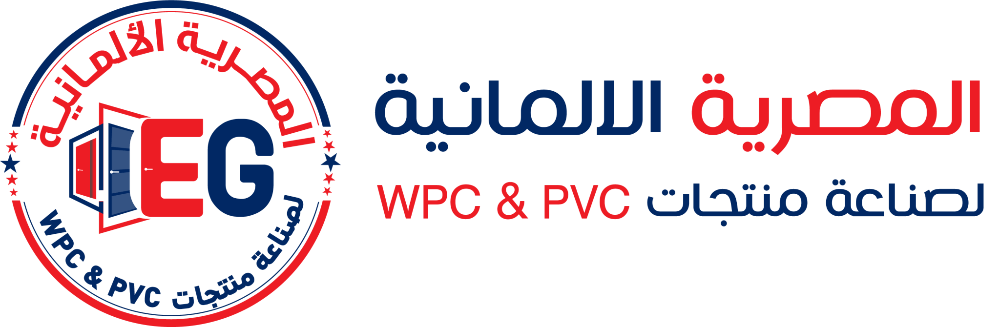

شل HR والقائمة الجانبية حسب الدور
/hrكل موظف يبدأ من «إيه المطلوب مني النهارده»، كل رقم قانوني إعداد بتاريخ سريان وحالة اعتماد، كل بيان حساس بطبقة سرية وفصل مهام يفرضه النظام، والعامل يخلّص أموره من موبايله أو من كشك الخط بعربي بسيط. الأرقام توضيحية، والقيم القانونية Pending Confirmation.
منصة HR: الأساس والبحث وحوارات الأمان (HR-00) · لوحات ومؤشرات وصندوق القرارات (HR-27) · الامتثال والإعدادات القانونية (HR-30) · الصلاحيات والسرية (HR-31) · الخدمة الذاتية (HR-32) · الإشعارات (HR-33). مجموع: 62 شاشة · 71 UC · 60 US · 84 BR. التقارير والمستندات في reports.html وhr-documents.html.
| ID | الفيتشر | الأولوية | الحالة | الشاشات | UC | أهم الممثلين | قرارات تعطّله |
|---|---|---|---|---|---|---|---|
| HR-00 | أساس HR: الشل والبحث العام وحوارات الأمان والحالات | P0 | New | 7 | 7 | كل المستخدمين | بند 15 (جلسة) · بند 25 |
| HR-27 | لوحات HR والمؤشرات وصندوق «طلبات تنتظر قرارك» | P1 | New | 10 | 11 | HR Manager · المالك · المشرف · الموظف · Payroll · OHS | D7 · بند 40 · بند 46 |
| HR-30 | الامتثال والإعدادات القانونية وتقويم الالتزامات | P0 | Law · Pending | 11 | 12 | HR Manager · Legal · المالية · المالك | D1 · D4 · D10 · D11 · D12 · بند 44 |
| HR-31 | صلاحيات HR والسرية وفصل المهام | P0 | Approved جزئياً | 8 | 11 | المالك · HR Manager · المراجع · System Admin | D6 · بند 46 · بند 24/25 |
| HR-32 | الخدمة الذاتية للموظف والمشرف (ويب · موبايل · كشك) | P0 | Pending | 20 | 19 | الموظف · المشرف · مسؤول الكشك | D2 · D5 · D15 · بنود 9 · 15 · 16 · 19 · 30 |
| HR-33 | الإشعارات والتذكيرات | P1 | Pending | 6 | 11 | HR Manager · مدير النظام · كل المستلمين | بند 17 · بند 18 · بند 19 · بند 29 |
| القرار / البند | الموضوع | يقيّد | الفيتشر |
|---|---|---|---|
| D1 | هل المصنع منشأة صناعية بقانون 15/2017؟ | مخطط الإجازة المرضية | HR-30 |
| D2 | مصدر الحضور الأول | مؤشرات الحضور والغياب | HR-27 · HR-32 |
| D4 | هيكل مكونات المرتب | التأميني/الضريبي | HR-30 |
| D6 | مين يملك «عرض الأجور» + مدة الاحتفاظ | المؤشرات المالية والمنح | HR-27 · HR-31 |
| D7 | حدود الاعتماد | الصندوق والسقوف | HR-27 |
| D10 | لائحة تنظيم العمل | حالة اللائحة | HR-30 · HR-32 |
| D11 | وحدة/لجنة السلامة | عتبات السلامة | HR-30 |
| D12 | تكامل المنظومات (يدوي/ملفات) | تقويم الالتزامات | HR-30 |
| D15 | الأرقام لاتينية | كل الشاشات | HR-32 |
| بند 9 | Offline: مسودات غير حساسة فقط | خدماتي | HR-32 |
| بند 15 | مهلة الجلسة 30 دقيقة (مقترح) | قفل الخمول | HR-00 · HR-32 |
| بند 17 | الـBackend يقرر الإشعار | الإشعارات | HR-33 · HR-27 |
| بند 18 | الأحداث والمستلمون وساعات الهدوء {Open} | الإشعارات | HR-33 |
| بند 40 | لا ربط محاسبي خارجي | W-20 · W-21 | HR-27 |
| بند 44/45 | مكونات المرتب · مصدر الحضور | جاهزية HR-30 | HR-30 · HR-27 |
| بند 46 | الأجور بمنح صريح؛ GM ليس تلقائياً | المؤشرات الأجرية | HR-27 · HR-31 |
hr.* وأحداث HR.* فقط.كل شاشات HR بتقف على نفس الهيكل: قائمة حسب الصلاحية، بحث عام، إعادة تحقق (Step-up)، تأكيد بسبب، ممنوع/فاضي/خطأ، وقفل الخمول. الغرض إن أي مستخدم يشوف ويعمل في حدود صلاحيته بس، وإن كل شاشة تتصرف بنفس الطريقة. مأخوذ من SA-00 كما هو ومضاف له قواعد بيانات الموظفين الحساسة.
أساس البحث: research/lifecycle-kpis.md §4.5 (Audit) · §6.2 (RTL) · docs/super-admin/00-foundation-and-catalogs.md (SA-00) · open-questions بنود 15 و25
/hrخطوة حماية قبل عملية حساسة
لازم تكتب السبب
سيصل هاني فتحي إشعار بالرفض مع السبب. الرصيد لن يتأثر.
لو محتاجها، اطلب من مدير الموارد البشرية يمنحك صلاحية hr.payroll.view.
رقم المحاولة ACC-20261104-0042 · لا يُكشف وجود السجل المطلوبمفيش نشاط من 30 دقيقة {Open — بند 15}. اتخبّت كل البيانات الحساسة.
هترجع لنفس الصفحة بعد التحقق. المسودات غير الحساسة محفوظة.ابدأ بإضافة أول موظف أو استورد ملف الموظفين.
امسح الفلاتر وجرّب تاني.
محتاج قرار HR على مصدر الحضور (بصمة / وجه / موبايل / يدوي).
جرّب تاني. لو استمرت المشكلة قول لـIT الرقم ده: ERR-7F3A91
الأرقام الظاهرة قد لا تعكس الوضع الحالي.
hr.access/hr أو من لانشر النظامhr.pii.reveal وبمطابقة تامة والنتيجة مقنّعةUS-HGL-01كمستخدم HR أريد قائمة جانبية بما أملك صلاحيته فقط
US-HGL-02كمستخدم أريد بحثاً عاماً سريعاً بالكود أو الاسم
US-HGL-03كمعتمد أريد أن أُسأل عن التحقق قبل العمليات الحساسة
US-HGL-04كمنفّذ أريد حوار تأكيد يبيّن الأثر ويطلب سبباً
US-HGL-05كمستخدم أريد أن أفهم سبب منعي
US-HGL-06كمسؤول أريد أن تقفل الجلسة نفسها عند الخمول
dir="ltr" أو <bdi>.| الكيان | الحقول | النوع | مطلوب | تحقق | الطبقة |
|---|---|---|---|---|---|
| HrSession | user_id · role_ids[] · scopes{} · sensitive_keys[] · idle_ttl · step_up_at · step_up_purpose | object | نعم | step_up_at يُفحص على الخادم | — |
| SearchIndexEntry | entity · id · t0_text · normalized_text · scope_keys[] | object | نعم | لا يفهرس T2–T4 إلا بمفاتيح مطابقة | T0 |
| ReasonCode | code · label_ar · applies_to[] · requires_text | object | نعم | قائمة قابلة للتعديل {Open} | T1 |
| AccessDenial | user_id · route · resource · reason · ts · count | object | نعم | يتجمّع عند التكرار | T1 |
لا اعتماد في HR-00. هو الإطار الذي تُنفَّذ فيه كل الاعتمادات. Step-up يسبق أي اعتماد حساس.
| المفتاح | المعنى |
|---|---|
| hr.access | دخول موديول HR (مرتبط بـ SA-09) |
| hr.search.pii | البحث بالرقم القومي أو الهاتف الشخصي |
| hr.view_as [New] | معاينة «عرض كدور» (HR-31) |
| الحدث | المعنى | الخطورة |
|---|---|---|
| HR.ACCESS.DENIED | محاولة وصول ممنوعة | معلومة |
| HR.SEARCH.PII_LOOKUP | بحث بالرقم القومي | متوسطة |
| HR.STEPUP.PASSED | نجاح التحقق الإضافي | معلومة |
| HR.STEPUP.FAILED | فشل التحقق الإضافي | متوسطة ← عالية |
| HR.SESSION.LOCKED | قفل الخمول | معلومة |
| HR.SESSION.EXPIRED | انتهاء الجلسة | معلومة |
| الحالة | النص |
|---|---|
| المنع (صفحة) | مالكش صلاحية تفتح الصفحة دي. لو محتاجها، اطلب من مدير الموارد البشرية. |
| زر معطّل | تتطلب صلاحية {اسم الصلاحية} |
| Step-up فاشل | التحقق مش صح. جرّب تاني ({n} محاولات متبقية). |
| خطأ عام | حصلت مشكلة وإحنا بنحمّل البيانات. جرّب تاني — الرقم المرجعي: {id} |
| جلسة منتهية | الجلسة انتهت لحماية بياناتك. سجّل الدخول تاني. |
HGL (HR Global) بنفس منطق GLB في SA-00.hr.* ← المورد ← النطاق؛ لا تخزّن T3/T4 في localStorage أو sessionStorage، وامسح الذاكرة عند القفل.allowed_actions[]) لا من افتراض الواجهة.كل شخص يفتح HR يشوف «إيه اللي مطلوب مني النهارده» الأول، وبعدها مؤشراته. كل ودجت بيجاوب على سؤال واحد، له صيغة واحدة مخزّنة في جدول تعريفات، ومصدره معروف، وصلاحيته واضحة، وحالته الفاضية صادقة (مفيش رقم مفبرك). كل رقم يفتح قائمة الناس اللي وراه.
أساس البحث: research/lifecycle-kpis.md §3.1 (صيغ) · §3.2 (لوحات حسب الجمهور) · §4.1 (مصفوفة الاعتماد) · §6.1 · research/competitors.md §7 (Approval inbox)
/hrالأربعاء 2026-11-04 · مصنع جمصة · بيانات توضيحية DEMO
التوظيف (HR-02/03) في الإصدار R3.
محتاج قرار D2 / بند 45 قبل ما يظهر أي استثناء.
لما يُعيَّن موظف جديد هيظهر هنا.
مفيش مغادرين مسجّلين في الفترة.
الأفواج بتظهر بعد مرور 90 يوماً على أول تعيين.
HR-02 · HR-03 في الإصدار R3 — لا يوجد رقم لحين التفعيل.
أضف تاريخ انتهاء للشهادات في ملف الموظف أو من مصفوفة المهارات.
/hr/ownerهل التكلفة تحت السيطرة؟ هل نحن آمنون؟ هل نحن مستقرون؟ · بيانات توضيحية DEMO
المفتاح hr.salary.view — الـGM لا يملكه تلقائياً (بند 46).
لا ربط معتمد بالمالية (بند 40). لا نسبة تُحسب بدون إيراد.
HR-21 في الإصدار R4.
لا يُعرض عدّاد بدون سجل حوادث.
لن يظهر رقم ولا صفر. اطلب المنح الصريح من المالك.
/hr/teamاليوم الأربعاء 2026-11-04 · 06:00 → 14:00 · بيانات توضيحية DEMO
/hr/boards/payrollPayroll Officer: «أقدر أقفل الشهر؟» · OHS: «فين المخاطر ومين غير ملتزم؟» · بيانات توضيحية DEMO
| الموظف | الصافي | الفرق |
|---|---|---|
م محمد صبريEMP-021 | 4,980 | +18% |
ه هاني فتحيEMP-027 | 5,210 | +0.4% |
إ إسلام جابرEMP-044 | 4,120 | −9% |
LTIFR (1,000,000) وTRIR (200,000) يظهران عند تفعيل HR-21 وربط ساعات العمل من HR-10.
/hr/inboxكل أنواع الطلبات في صندوق واحد · الأقرب للتأخير أولاً · بيانات توضيحية DEMO
/hr/inbox/:idالصندوق خلف الدرج
/hr/kpi/:codeمن الرقم إلى الناس · رجوع للوحة · فلاتر محفوظة · بيانات توضيحية DEMO
| الموظف | القسم | مدة الخدمة | النوع | السبب T4 |
|---|---|---|---|---|
م محمد خالدEMP-058 · مشغّل | خط البثق | 4 أشهر | اختياري | استقالة — مسافة السفر |
ر رامي شعبانEMP-049 · عامل | المخزن | 1 سنة 2 شهر | اختياري | استقالة — عرض أعلى |
و وليد منصورEMP-063 · فني | تجميع الأبواب | 2 شهر | غير اختياري | انتهاء تجربة بدون تثبيت |
التصدير يظهر في سجل الوصول HR.ANL.EXPORT
/hr/settings/kpisصيغة واحدة لكل مؤشر · أرقام المالك لازم تطابق المرتبات · 48 مؤشراً
| الكود | المؤشر | الصيغة | المصدر | الصلاحية | الهدف | النسخة |
|---|---|---|---|---|---|---|
| W-01 | عدد العاملين | عدد الموظفين بحالة {تجربة، نشط، إجازة، موقوف، فترة إخطار} في آخر يوم بالفترة. FTE = Σ … | HR-06 · HR-34 | hr.dashboard.view | {Open} | v1 |
| W-02 | العدد مقابل الميزانية بالقسم | عدد الموظفين الفعلي ÷ عدد الوظائف المعتمدة في الخطة لكل قسم | HR-01 · HR-06 | hr.dashboard.view | {Open} | v1 |
| W-03 | معدل الدوران (Turnover) | عدد المغادرين في الفترة ÷ متوسط العدد × 100. متوسط العدد = (أول الفترة + آخرها) ÷ 2. س… | HR-23 · HR-26 | hr.dashboard.view | {Open} | v1 |
| W-04 | الاستقالة المبكرة (أول 90 يوم) | من انتهت خدمته خلال 90 يوماً من فوج التعيين ÷ عدد الفوج × 100 (حسب شهر التعيين) | HR-05 · HR-23 | hr.dashboard.view | {Open} | v1 |
| W-05 | الاحتفاظ بعد سنة | من لا يزال موظفاً بعد 12 شهراً ÷ عدد الفوج × 100 | HR-05 · HR-23 | hr.dashboard.view | {Open} | v1 |
| W-06 | معدل الغياب | أيام الغياب غير المخطط ÷ (أيام العمل المجدولة × متوسط العدد) × 100. الإجازة المعتمدة م… | HR-10 · HR-11 | hr.dashboard.view | {Open} | v1 |
| W-07 | معدل التأخير | عدد مرات التأخير ÷ الورديات المحضورة × 100. + متوسط دقائق التأخير. السماحية من السياسة | HR-10 | hr.dashboard.view | {Open} | v1 |
| W-08 | مؤشر Bradford (للمشرف) | B = S² × D (S = عدد فترات الغياب المنفصلة، D = إجمالي الأيام) على آخر 52 أسبوع. يستبعد… | HR-10 · HR-11 | hr.dashboard.view (نطاق الفريق) | {Open} | v1 |
| W-09 | نسبة الأوفرتايم (ساعات) | ساعات الأوفرتايم ÷ ساعات العمل العادية المجدولة × 100، لكل قسم وموظف مقابل السقف | HR-12 · HR-10 | hr.dashboard.view | {Open} | v1 |
| W-10 | تكلفة الأوفرتايم مقابل الميزانية | أجر الأوفرتايم ÷ الأجر الأساسي × 100 ومقارنة بميزانية الشهر | HR-12 · HR-14 | T3 hr.salary.view | {Open} | v1 |
| W-11 | متوسط الوقت للتعيين (Time to fill) | Σ(أيام من اعتماد الطلب لقبول العرض) ÷ عدد التعيينات | HR-02 · HR-03 · HR-04 | hr.dashboard.view | {Open} | v1 |
| W-12 | الوقت من أول تواصل للقبول | أيام من أول تواصل مع المرشح لقبول العرض (متوسط) | HR-03 · HR-04 | hr.dashboard.view | {Open} | v1 |
| W-13 | تكلفة التعيين الواحد | (تكلفة داخلية + خارجية: إعلانات، وكالات، اختبارات، كشف طبي) ÷ عدد التعيينات | HR-03 · HR-04 | T3 hr.salary.view | {Open} | v1 |
| W-14 | نسبة قبول العروض | العروض المقبولة ÷ العروض المرسلة × 100 + أسباب الرفض (أجر، مسافة، وردية) | HR-04 | hr.dashboard.view | {Open} | v1 |
| W-15 | قمع طلبات التوظيف | عدد الطلبات/المرشحين في كل مرحلة (طلب ← فرز ← مقابلة ← اختبار ← عرض ← تعيين) | HR-02 · HR-03 | hr.dashboard.view | {Open} | v1 |
| W-16 | فعالية مصادر التوظيف | تعيينات المصدر ÷ متقدمي المصدر + بقاء بعد 90 يوم | HR-03 | hr.dashboard.view | {Open} | v1 |
| W-17 | ساعات التدريب للموظف | إجمالي ساعات التدريب ÷ متوسط العدد (سلامة إلزامي / مهارات منفصلين) | HR-19 | hr.dashboard.view | {Open} | v1 |
| W-18 | تغطية مصفوفة المهارات | الموظفون بمهارات إلزامية سارية ÷ الموظفين × 100 (لكل قسم وماكينة) | HR-19 | hr.dashboard.view | {Open} | v1 |
| W-19 | انتهاء الشهادات والكشوف | المنتهي ÷ المطلوب × 100 + العدد ≤ 30/60/90 يوم. الهدف صفر | HR-19 · HR-21 · HR-06 | hr.dashboard.view | {Open} | v1 |
| W-20 | تكلفة العمالة كنسبة من الإيراد | إجمالي تكلفة التوظيف (إجمالي الأجور + تأمينات صاحب العمل + بدلات + حوافز) ÷ الإيراد × … | HR-14 · المالية | T3 hr.salary.view | {Open} | v1 |
| W-21 | الإيراد لكل موظف | الإيراد ÷ متوسط العدد (أو FTE) | المالية · HR-06 | hr.dashboard.owner | {Open} | v1 |
| W-22 | تكلفة العمالة للوحدة | إجمالي تكلفة العمالة ÷ الوحدات المنتَجة (قطعة/كجم/م²) | HR-14 · الإنتاج | T3 hr.salary.view | {Open} | v1 |
| W-23 | إنتاجية معدّلة بالأوفرتايم | الإنتاج ÷ إجمالي ساعات العمل (عادي + أوفرتايم) | الإنتاج · HR-10 · HR-12 | hr.dashboard.owner | {Open} | v1 |
| W-24 | LTIFR | إصابات فقدان وقت × 1,000,000 ÷ إجمالي ساعات العمل (القاعدة 1,000,000 تُكتب على الودجت) | HR-21 · HR-10 | hr.dashboard.view | {Open} | v1 |
| W-25 | TRIR | الحوادث المسجّلة × 200,000 ÷ إجمالي ساعات العمل (أساس OSHA، لا يُقارن مع LTIFR) | HR-21 · HR-10 | hr.dashboard.view | {Open} | v1 |
| W-26 | معدل الشدة | أيام فقدان الوقت × 1,000,000 ÷ ساعات العمل — التعريف غير متحقق منه، يؤكَّد قبل العرض | HR-21 | hr.dashboard.view | {Open} | v1 |
| W-27 | نسبة شبه الحوادث | شبه الحوادث المُبلَّغة ÷ الحوادث المسجّلة (أعلى = إبلاغ صحي) | HR-21 | hr.dashboard.view | {Open} | v1 |
| W-28 | أيام منذ آخر إصابة تعطّل | اليوم − تاريخ آخر LTI | HR-21 | hr.dashboard.view | {Open} | v1 |
| W-29 | نسبة المقاولين | مقاولون + يومية ÷ إجمالي القوى العاملة | HR-34 · HR-06 | hr.dashboard.view | {Open} | v1 |
| W-30 | دقة المرتبات | مفردات بها تصحيح ÷ المفردات الصادرة × 100 | HR-14 · HR-16 | hr.payroll.view | {Open} | v1 |
| W-31 | انكشاف السلف | رصيد السلف القائم ÷ صافي مرتبات الشهر | HR-15 · HR-14 | T3 hr.salary.view | {Open} | v1 |
| W-32 | معدل الجزاءات | عدد الحالات ÷ متوسط العدد × 100 (حسب درجة الجزاء) — تجميعي، القوائم T4 | HR-20 | hr.discipline.view | {Open} | v1 |
| W-33 | التزام حصة ذوي الإعاقة | العاملون من ذوي الإعاقة ÷ إجمالي العاملين × 100 مقابل {5%} لأصحاب {20}+ عامل | HR-06 · HR-30 | hr.compliance.view | {Open} | v1 |
| W-34 | متأخرات العلاوة السنوية | عدد من آخر علاوة له أقدم من 12 شهراً ÷ العدد (الحد الأدنى {3%} من الأجر التأميني) | HR-07 · HR-13 | T3 hr.salary.view | {Open} | v1 |
| W-35 | التزام الإجازات | Σ(الأيام غير المستخدمة × الأجر اليومي) | HR-11 · HR-13 | T3 hr.salary.view | {Open} | v1 |
| W-36 | فترات تجربة تنتهي خلال 14 يوم | قائمة من تنتهي تجربته خلال 14 يوماً (حد أقصى {3 أشهر} [Law]) | HR-05 | hr.dashboard.view | {Open} | v1 |
| W-37 | استثناءات الحضور | بصمات ناقصة + غياب بدون إخطار + تأخير غير مبرر (اليوم) | HR-10 | hr.dashboard.view | {Open} | v1 |
| W-38 | قضايا مفتوحة | عدد الحالات المفتوحة (قانونية، تظلمات، جزاءات) + أقرب جلسة | HR-20 | hr.discipline.view · hr.legal.view | {Open} | v1 |
| W-39 | طلبات تنتظر قرارك | عدد عناصر الصندوق التي أنا خطوتها الحالية أو مفوَّض فيها | HR-27 (الصندوق) | hr.inbox.view | {Open} | v1 |
| W-40 | التشكيل اليوم مقابل الحضور | المجدولون ÷ الحاضرون + الفجوة عن الحد الأدنى للطاقم | HR-09 · HR-10 | hr.dashboard.view (نطاق الفريق) | {Open} | v1 |
| W-41 | تغطية المهارات لماكينات اليوم | ماكينات اليوم ÷ ماكينات عليها مشغّل بشهادة سارية | HR-19 · HR-09 | hr.dashboard.view (نطاق الفريق) | {Open} | v1 |
| W-42 | أوفرتايم المستخدم مقابل السقف | ساعات الأوفرتايم للفرد ÷ السقف {Open} | HR-12 | hr.dashboard.view (نطاق الفريق) | {Open} | v1 |
| W-43 | ورديتي القادمة | أقرب وردية منشورة للموظف + مكان الخط | HR-09 | ذاتي | {Open} | v1 |
| W-44 | رصيد إجازاتي | الرصيد السنوي والعارضة والمستخدم (شرائح 15/21/30/45 [Law]) | HR-11 | ذاتي | {Open} | v1 |
| W-45 | مفردات مرتبي وسلفتي | آخر مفردة مرتب + رصيد السلفة والقسط القادم (سري) | HR-16 · HR-15 | ذاتي (T3) | {Open} | v1 |
| W-46 | قائمة قفل الشهر | بنود ما قبل القفل: استثناءات، أوفرتايم غير معتمد، صافي سالب، بنوك ناقصة، حدود التأمين | HR-14 | hr.payroll.prepare | {Open} | v1 |
| W-47 | فروقات عن الشهر السابق | الفرق لكل موظف عن الشهر السابق مع علامة عند > {X%} | HR-14 | T3 hr.salary.view | {Open} | v1 |
| W-48 | لوحة السلامة | سجل الحوادث + CAPA متأخرة + PPE مستحق + لياقة طبية مستحقة | HR-21 · HR-08 | hr.dashboard.view (OHS) | {Open} | v1 |
يختلف عن «صفر»: لم يُسجَّل حضور في الفترة المحددة.
محتاج قرار D2 (HR). المؤشر لا يُحسب قبل كده.
المفتاح hr.salary.view. لا يظهر رقم ولا صفر.
جرّب تاني — الرقم المرجعي ERR-31C9A0
العدد أقل من {Open} فتم تجميعه لحماية الخصوصية.
/hrhr.dashboard.viewhr.dashboard.exporthr.export.sensitive + Step-uphr.inbox.delegatehr.kpi.define)hr.kpi.target.edit)US-ANL-01كمدير موارد بشرية أريد أن أرى أولاً ما ينتظر قراري
US-ANL-02كمالك أريد خمسة مؤشرات تجيب: هل التكلفة تحت السيطرة، هل نحن آمنون، هل مستقرون
hr.salary.viewUS-ANL-03كمشرف أريد أعرف مين في ورديتي ومين غايب ومين يقدر يشغّل إيه
US-ANL-04كمدير أريد أفتح أي رقم وأشوف الناس وراه
US-ANL-05كمعتمد أريد أعرف ليه زر الاعتماد معطّل
US-ANL-06كمعتمد أريد اعتماد الأوفرتايم بالجملة بأمان
US-ANL-07كمدير أريد تصدير لوحة كـPDF/Excel بشكل رسمي
US-ANL-08كمدير أريد ألا أرى رقماً مفبركاً عندما لا يوجد مصدر
US-ANL-09كـHR Manager أريد صيغة واحدة ثابتة لكل مؤشر
US-ANL-10كموظف أريد لوحتي: وردية، رصيد، طلبات، مفردة
KpiDefinition بمالك ونص الصيغة؛ أرقام المالك يجب أن تطابق المرتبات.hr.salary.view وإلا يختفي أو يظهر «ممنوع» — لا يُعرض صفراً ولا نسبة. GM غير مخوّل تلقائياً (بند 46 Pending).hr.export.sensitive + Step-up + علامة مائية + تسجيل.| الكيان | الحقول | النوع | مطلوب | تحقق | الطبقة |
|---|---|---|---|---|---|
| KpiDefinition | id · code (W-xx) · name_ar · formula_text · numerator_src · denominator_src · direction (higher/lower/watch) · unit · tier · permission_key · refresh · owner_user · target_low · target_high · version · effective_from | object | نعم | target_* قيم {Open} | T1 |
| KpiSnapshot | kpi_id · period · scope{dept,shift,site} · value · numerator · denominator · computed_at · source_version · status (ok / partial / no_source / no_data) | object | نعم | status لا يُترك فارغاً | T1–T3 حسب المؤشر |
| InboxItem | id · type · ref_type · ref_id · requester_id · current_step · approver_ids[] · delegate_of · created_at · due_at · sla_state · sod_flag · status | object | نعم | sod_flag من محرك SoD | T1–T3 |
| DashboardLayout | role · widgets[{code,order,size}] · default_filters | object | نعم | قابل للتخصيص لاحقاً | T0 |
| SavedFilter | user_id · name · period · dept · shift · site | object | لا | خاص بالمستخدم | T0 |
الصندوق لا يعرّف سلاسل جديدة؛ يعرض خطوات كل فيتشر. مثال مقترح من البحث (§4.1) — الحدود والقيم {Open} (قرار D7):
إجازة: المشرف ← HR · أوفرتايم: المشرف يطلب ← مدير الإنتاج ← HR (فحص السقف) ← المالية لو فوق الميزانية · سلفة: رئيس القسم ← HR ← المالية ← GM فوق الحد · طلب توظيف: رئيس القسم ← HR ← المالية (غير مخطط) ← GM · تغيير أجر: رئيس القسم ← HR Manager ← المالية ← GM · جزاء: المشرف يبلّغ ← HR يحقق ← HR Manager + رئيس القسم ← GM + Legal للفصل · كشف المرتبات: Payroll ← HR Manager ← المالية ← GM (بوابة فروقات) · مخالصة: Payroll ← HR ← المالية ← GM.
SLA: تذكير بعد {Open}، تصعيد لرئيس المعتمد بعد يوم عمل (إجازة — مقترح بحثي).
| المفتاح | المعنى |
|---|---|
| hr.dashboard.view | عرض لوحات HR (بنطاق self/team/dept/site/all) |
| hr.dashboard.owner | لوحة المالك/GM والمؤشرات المالية غير الأجرية |
| hr.dashboard.export | تصدير اللوحات |
| hr.inbox.view | صندوق القرارات |
| hr.inbox.approve | الاعتماد من الصندوق (بالإضافة لمفتاح كل نوع) |
| hr.inbox.delegate | التحويل/التفويض |
| hr.kpi.define | تعديل تعريفات المؤشرات |
| hr.kpi.target.edit | ضبط الأهداف |
| hr.salary.view | المؤشرات المشتقة من الأجور (W-10 · W-13 · W-20 · W-22 · W-31 · W-34 · W-35 · W-47) |
| hr.discipline.view · hr.legal.view | ودجت القضايا (W-32 · W-38) |
| الحدث | المعنى | الخطورة |
|---|---|---|
| HR.ANL.EXPORT | تصدير لوحة/ودجت | عالية |
| HR.ANL.DRILL_SENSITIVE | قراءة قائمة T3/T4 عبر Drill-down | عالية |
| HR.ANL.KPI_DEF_CHANGED | تغيير تعريف مؤشر | عالية |
| HR.ANL.TARGET_CHANGED | تغيير هدف | متوسطة |
| HR.INBOX.APPROVED | اعتماد من الصندوق | عالية |
| HR.INBOX.REJECTED | رفض (مع سبب) | عالية |
| HR.INBOX.CHANGES_REQUESTED | طلب تعديل | متوسطة |
| HR.INBOX.DELEGATED | تحويل/تفويض | عالية |
| HR.INBOX.BULK_APPROVED | اعتماد جماعي | عالية |
| HR.INBOX.SOD_BLOCKED | منع فصل مهام | عالية |
reports.html وhr-documents.html.| الحالة | النص |
|---|---|
| فلتر بلا نتائج | مفيش نتائج بالفلاتر دي. امسح الفلاتر وجرّب تاني. |
| مصدر غير مفعّل | المؤشر ده محتاج {الفيتشر} ولسه مش مفعّل. |
| بدون صلاحية | المؤشر ده سري ومحتاج صلاحية {المفتاح}. |
| مجموعة صغيرة | العدد قليل جداً فتم إخفاء التفاصيل لحماية الخصوصية. |
| اعتماد معطّل | إنت اللي أنشأت الطلب ده، لازم معتمد تاني. |
| طلب اتغيّر | الطلب اتغيّر من حد تاني. حدّث الصفحة وراجعه. |
KpiDefinition بمالك ونسخ بتاريخ سريان (البحث §3.2: single definition per KPI).data.wages.view بينما README يستخدم hr.salary.view: لازم قرار توحيد (نقترح hr.salary.view كمفتاح HR يُربط بنفس منحة SA-03).GET /hr/inbox?bucket=act|wait|done يُرجع allowed_actions[] وsod_block_reason لكل عنصر؛ لا يحسب الواجهة الصلاحية.status إجباري في KpiSnapshot.no_data لا 0%.| الكود | الودجت والسؤال | الصيغة | المصدر | الرسم | الصلاحية | الحالة الفاضية |
|---|---|---|---|---|---|---|
| W-01 | عدد العاملين كام واحد شغال دلوقتي، وموزّعين إزاي؟ | عدد الموظفين بحالة {تجربة، نشط، إجازة، موقوف، فترة إخطار} في آخر يوم بالفترة. FTE = Σ ساعات التعاقد ÷ الساعات المعيارية. موظف / مقاول / يومية بشكل منفصل | HR-06 · HR-34 | بطاقة KPI + Sparkline + شريط تقسيم | hr.dashboard.view | لا توجد ملفات موظفين بعد — أضف موظفاً أو استورد من HR-06 |
| W-02 | العدد مقابل الميزانية بالقسم هل أي قسم زاد عن عدد الوظائف المعتمدة؟ | عدد الموظفين الفعلي ÷ عدد الوظائف المعتمدة في الخطة لكل قسم | HR-01 · HR-06 | Bullet chart (علامة الهدف) | hr.dashboard.view | ميزانية الوظائف غير مُعدّة (HR-01) — لا يُعرض مقارنة |
| W-03 | معدل الدوران (Turnover) هل الناس بتسيب أكتر من الطبيعي؟ | عدد المغادرين في الفترة ÷ متوسط العدد × 100. متوسط العدد = (أول الفترة + آخرها) ÷ 2. سنوي = آخر 12 شهراً. تقسيم اختياري/غير اختياري | HR-23 · HR-26 | خط 12 شهراً + أعمدة مكدّسة بالسبب | hr.dashboard.view | لا توجد حالات إنهاء خدمة مسجّلة في الفترة |
| W-04 | الاستقالة المبكرة (أول 90 يوم) الداخلين الجداد بيكمّلوا ولا بيمشوا بدري؟ | من انتهت خدمته خلال 90 يوماً من فوج التعيين ÷ عدد الفوج × 100 (حسب شهر التعيين) | HR-05 · HR-23 | Heatmap أفواج التعيين | hr.dashboard.view | يحتاج بيانات تعيين لا تقل عن 3 أشهر |
| W-05 | الاحتفاظ بعد سنة كام من فوج التعيين لسه معانا بعد 12 شهر؟ | من لا يزال موظفاً بعد 12 شهراً ÷ عدد الفوج × 100 | HR-05 · HR-23 | جدول أفواج | hr.dashboard.view | لا يوجد فوج مكتمل 12 شهراً بعد |
| W-06 | معدل الغياب الغياب بدون إذن بيزيد في أي وردية/قسم؟ | أيام الغياب غير المخطط ÷ (أيام العمل المجدولة × متوسط العدد) × 100. الإجازة المعتمدة مستبعدة، والمرضي بشهادة يُعرض منفصلاً | HR-10 · HR-11 | خط أسبوعي + تقسيم حسب الوردية | hr.dashboard.view | مصدر الحضور غير مُعدّ (قرار D2 / بند 45) |
| W-07 | معدل التأخير نسبة التأخير ومتوسط الدقائق؟ | عدد مرات التأخير ÷ الورديات المحضورة × 100. + متوسط دقائق التأخير. السماحية من السياسة | HR-10 | خط + عدّاد | hr.dashboard.view | سماحية التأخير غير مُعدّة {Open} (D3) |
| W-08 | مؤشر Bradford (للمشرف) مين عنده غياب قصير متكرر محتاج كلام؟ | B = S² × D (S = عدد فترات الغياب المنفصلة، D = إجمالي الأيام) على آخر 52 أسبوع. يستبعد المرضي بشهادة والأمومة وإصابة العمل | HR-10 · HR-11 | قائمة مرتّبة + شارة | hr.dashboard.view (نطاق الفريق) | لا يوجد غياب متكرر في آخر 52 أسبوع |
| W-09 | نسبة الأوفرتايم (ساعات) الأوفرتايم داخل السقف ولا بيزيد؟ | ساعات الأوفرتايم ÷ ساعات العمل العادية المجدولة × 100، لكل قسم وموظف مقابل السقف | HR-12 · HR-10 | أعمدة + خط السقف | hr.dashboard.view | لا توجد طلبات أوفرتايم معتمدة في الفترة |
| W-10 | تكلفة الأوفرتايم مقابل الميزانية الأوفرتايم بيكلّفنا قد إيه بالنسبة للمخطط؟ | أجر الأوفرتايم ÷ الأجر الأساسي × 100 ومقارنة بميزانية الشهر | HR-12 · HR-14 | أعمدة + خط الميزانية | hr.salary.view T3 | يتطلب كشف مرتبات محسوب (HR-14) وصلاحية عرض الأجور |
| W-11 | متوسط الوقت للتعيين (Time to fill) بناخد كام يوم لنقفل وظيفة؟ | Σ(أيام من اعتماد الطلب لقبول العرض) ÷ عدد التعيينات | HR-02 · HR-03 · HR-04 | أعمدة بالوظيفة | hr.dashboard.view | لا توجد طلبات توظيف مغلقة |
| W-12 | الوقت من أول تواصل للقبول مدة رحلة المرشح؟ | أيام من أول تواصل مع المرشح لقبول العرض (متوسط) | HR-03 · HR-04 | رقم + خط | hr.dashboard.view | لا توجد عروض مقبولة بعد |
| W-13 | تكلفة التعيين الواحد التوظيف بيكلّف كام؟ | (تكلفة داخلية + خارجية: إعلانات، وكالات، اختبارات، كشف طبي) ÷ عدد التعيينات | HR-03 · HR-04 | رقم + اتجاه | hr.salary.view T3 | تكاليف التوظيف غير مسجّلة — تصنيف الصلاحية Pending [New] |
| W-14 | نسبة قبول العروض الناس بتقبل عروضنا؟ وليه بترفض؟ | العروض المقبولة ÷ العروض المرسلة × 100 + أسباب الرفض (أجر، مسافة، وردية) | HR-04 | شريط + أسباب | hr.dashboard.view | لا توجد عروض مرسلة |
| W-15 | قمع طلبات التوظيف فين بتقف الطلبات؟ | عدد الطلبات/المرشحين في كل مرحلة (طلب ← فرز ← مقابلة ← اختبار ← عرض ← تعيين) | HR-02 · HR-03 | Funnel أفقي | hr.dashboard.view | لا توجد طلبات مفتوحة |
| W-16 | فعالية مصادر التوظيف أي مصدر بيجيب ناس بتستمر؟ | تعيينات المصدر ÷ متقدمي المصدر + بقاء بعد 90 يوم | HR-03 | جدول | hr.dashboard.view | لا توجد بيانات مصدر |
| W-17 | ساعات التدريب للموظف بنستثمر كفاية في التدريب؟ | إجمالي ساعات التدريب ÷ متوسط العدد (سلامة إلزامي / مهارات منفصلين) | HR-19 | رقم + أعمدة | hr.dashboard.view | لا توجد دورات منفّذة في الفترة |
| W-18 | تغطية مصفوفة المهارات كام موظف عنده كل المهارات المطلوبة لوظيفته؟ | الموظفون بمهارات إلزامية سارية ÷ الموظفين × 100 (لكل قسم وماكينة) | HR-19 | Heatmap مصفوفة | hr.dashboard.view | مصفوفة المهارات غير مُعدّة (HR-19) |
| W-19 | انتهاء الشهادات والكشوف إيه اللي هينتهي ومحتاج تجديد؟ | المنتهي ÷ المطلوب × 100 + العدد ≤ 30/60/90 يوم. الهدف صفر | HR-19 · HR-21 · HR-06 | Timeline/Heatmap تقويم | hr.dashboard.view | لا توجد شهادات أو مستندات بتاريخ انتهاء |
| W-20 | تكلفة العمالة كنسبة من الإيراد هل تكلفة العمالة تحت السيطرة؟ | إجمالي تكلفة التوظيف (إجمالي الأجور + تأمينات صاحب العمل + بدلات + حوافز) ÷ الإيراد × 100 | HR-14 · المالية | KPI + Sparkline + نطاق هدف | hr.salary.view T3 | الإيراد غير متصل من المالية (بند 40) — لا يُحسب |
| W-21 | الإيراد لكل موظف الإنتاجية المالية للفرد؟ | الإيراد ÷ متوسط العدد (أو FTE) | المالية · HR-06 | KPI | hr.dashboard.owner | الإيراد غير متصل من المالية (بند 40) |
| W-22 | تكلفة العمالة للوحدة كل متر/قطعة بتتكلف عمالة قد إيه؟ | إجمالي تكلفة العمالة ÷ الوحدات المنتَجة (قطعة/كجم/م²) | HR-14 · الإنتاج | خط | hr.salary.view T3 | يحتاج كمية إنتاج من الموديول وكشف مرتبات مُغلق |
| W-23 | إنتاجية معدّلة بالأوفرتايم الإنتاج لكل ساعة فعلية؟ | الإنتاج ÷ إجمالي ساعات العمل (عادي + أوفرتايم) | الإنتاج · HR-10 · HR-12 | خط | hr.dashboard.owner | يحتاج بيانات إنتاج وحضور |
| W-24 | LTIFR هل في إصابات بتوقف عن الشغل؟ | إصابات فقدان وقت × 1,000,000 ÷ إجمالي ساعات العمل (القاعدة 1,000,000 تُكتب على الودجت) | HR-21 · HR-10 | KPI + خط، الهدف 0 | hr.dashboard.view | سجل الحوادث غير مفعّل (HR-21) أو ساعات العمل غير متاحة |
| W-25 | TRIR إجمالي الإصابات المسجّلة نسبةً للساعات | الحوادث المسجّلة × 200,000 ÷ إجمالي ساعات العمل (أساس OSHA، لا يُقارن مع LTIFR) | HR-21 · HR-10 | خط | hr.dashboard.view | سجل الحوادث غير مفعّل (HR-21) |
| W-26 | معدل الشدة الإصابات خطيرة قد إيه؟ | أيام فقدان الوقت × 1,000,000 ÷ ساعات العمل — التعريف غير متحقق منه، يؤكَّد قبل العرض | HR-21 | خط | hr.dashboard.view | التعريف يحتاج تأكيد OHS قبل التفعيل [Open] |
| W-27 | نسبة شبه الحوادث بنبلّغ عن المخاطر قبل ما تبقى حوادث؟ | شبه الحوادث المُبلَّغة ÷ الحوادث المسجّلة (أعلى = إبلاغ صحي) | HR-21 | رقم + اتجاه | hr.dashboard.view | لا توجد بلاغات |
| W-28 | أيام منذ آخر إصابة تعطّل بقالنا كام يوم بدون إصابة؟ | اليوم − تاريخ آخر LTI | HR-21 | عدّاد كبير (يظهر في الكشك والبوابة) | hr.dashboard.view | لا يوجد سجل — لا يُعرض عدّاد |
| W-29 | نسبة المقاولين اعتمادنا على مقاولين/يومية قد إيه؟ | مقاولون + يومية ÷ إجمالي القوى العاملة | HR-34 · HR-06 | KPI | hr.dashboard.view | لا توجد عمالة مقاولين مسجّلة (D9) |
| W-30 | دقة المرتبات كام مفردة مرتب اتصحّحت بعد الإصدار؟ | مفردات بها تصحيح ÷ المفردات الصادرة × 100 | HR-14 · HR-16 | رقم + اتجاه | hr.payroll.view | لا توجد دورة مرتبات مُغلقة |
| W-31 | انكشاف السلف السلف القائمة نسبةً لصافي المرتبات؟ | رصيد السلف القائم ÷ صافي مرتبات الشهر | HR-15 · HR-14 | رقم + خط | hr.salary.view T3 | لا توجد سلف قائمة |
| W-32 | معدل الجزاءات عدد الجزاءات نسبةً للعدد | عدد الحالات ÷ متوسط العدد × 100 (حسب درجة الجزاء) — تجميعي، القوائم T4 | HR-20 | أعمدة | hr.discipline.view | لا توجد حالات في الفترة |
| W-33 | التزام حصة ذوي الإعاقة هل وصلنا للنسبة القانونية؟ | العاملون من ذوي الإعاقة ÷ إجمالي العاملين × 100 مقابل {5%} لأصحاب {20}+ عامل | HR-06 · HR-30 | Gauge + علامة الهدف | hr.compliance.view | غير مسجّل في الملفات — الحصة غير قابلة للحساب |
| W-34 | متأخرات العلاوة السنوية مين عدّى عليه سنة من غير علاوة؟ | عدد من آخر علاوة له أقدم من 12 شهراً ÷ العدد (الحد الأدنى {3%} من الأجر التأميني) | HR-07 · HR-13 | رقم + قائمة | hr.salary.view T3 | تاريخ العلاوات غير متاح (HR-07 / HR-13) |
| W-35 | التزام الإجازات قيمة الإجازات المتراكمة؟ | Σ(الأيام غير المستخدمة × الأجر اليومي) | HR-11 · HR-13 | رقم | hr.salary.view T3 | يحتاج أرصدة إجازات وأجور |
| W-36 | فترات تجربة تنتهي خلال 14 يوم مين محتاج قرار تثبيت؟ | قائمة من تنتهي تجربته خلال 14 يوماً (حد أقصى {3 أشهر} [Law]) | HR-05 | قائمة + عدّاد | hr.dashboard.view | لا يوجد موظفون بتجربة |
| W-37 | استثناءات الحضور إيه المطلوب مراجعته النهارده؟ | بصمات ناقصة + غياب بدون إخطار + تأخير غير مبرر (اليوم) | HR-10 | قائمة بحالة | hr.dashboard.view | لا توجد استثناءات — أو مصدر الحضور غير مُعدّ |
| W-38 | قضايا مفتوحة إيه القضايا والتحقيقات المفتوحة وموعد الجلسة الجاية؟ | عدد الحالات المفتوحة (قانونية، تظلمات، جزاءات) + أقرب جلسة | HR-20 | قائمة | hr.discipline.view · hr.legal.view | لا توجد حالات مفتوحة |
| W-39 | طلبات تنتظر قرارك إيه اللي واقف عليّ؟ | عدد عناصر الصندوق التي أنا خطوتها الحالية أو مفوَّض فيها | HR-27 (الصندوق) | عدّاد + قائمة | hr.inbox.view | لا شيء بانتظار قرارك |
| W-40 | التشكيل اليوم مقابل الحضور الوردية مكتملة؟ | المجدولون ÷ الحاضرون + الفجوة عن الحد الأدنى للطاقم | HR-09 · HR-10 | قائمة بحالة + شريط فجوة | hr.dashboard.view (نطاق الفريق) | لا يوجد جدول منشور اليوم (HR-09) |
| W-41 | تغطية المهارات لماكينات اليوم كل ماكينة عليها مشغّل مؤهل؟ | ماكينات اليوم ÷ ماكينات عليها مشغّل بشهادة سارية | HR-19 · HR-09 | مصفوفة | hr.dashboard.view (نطاق الفريق) | مصفوفة المهارات غير مُعدّة |
| W-42 | أوفرتايم المستخدم مقابل السقف مين قرّب على سقف الأوفرتايم؟ | ساعات الأوفرتايم للفرد ÷ السقف {Open} | HR-12 | Progress لكل فرد | hr.dashboard.view (نطاق الفريق) | سقف الأوفرتايم غير مُعدّ {Open} |
| W-43 | ورديتي القادمة أروح امتى؟ | أقرب وردية منشورة للموظف + مكان الخط | HR-09 | بطاقة | ذاتي | لم تُنشر وردية بعد |
| W-44 | رصيد إجازاتي باقي لي كام يوم؟ | الرصيد السنوي والعارضة والمستخدم (شرائح 15/21/30/45 [Law]) | HR-11 | بطاقة + شريط | ذاتي | الرصيد غير محسوب — راجع HR |
| W-45 | مفردات مرتبي وسلفتي استلمت كام وفاضل عليّ كام سلفة؟ | آخر مفردة مرتب + رصيد السلفة والقسط القادم (سري) | HR-16 · HR-15 | قائمة | ذاتي (T3) | لا توجد مفردة مرتب منشورة |
| W-46 | قائمة قفل الشهر أقدر أقفل الشهر؟ | بنود ما قبل القفل: استثناءات، أوفرتايم غير معتمد، صافي سالب، بنوك ناقصة، حدود التأمين | HR-14 | Checklist | hr.payroll.prepare | لا توجد دورة مفتوحة |
| W-47 | فروقات عن الشهر السابق إيه اللي اتغيّر بالمرتبات؟ | الفرق لكل موظف عن الشهر السابق مع علامة عند > {X%} | HR-14 | جدول فروقات | hr.salary.view T3 | لا توجد دورة سابقة للمقارنة |
| W-48 | لوحة السلامة فين المخاطر ومين غير ملتزم؟ | سجل الحوادث + CAPA متأخرة + PPE مستحق + لياقة طبية مستحقة | HR-21 · HR-08 | جدول + خط | hr.dashboard.view (OHS) | موديول السلامة غير مفعّل (HR-21) |
القانون في مصر اتغيّر في 2025 ولسه قرارات تنفيذية بتتصدر، فكل رقم قانوني (تأمينات، ضريبة، أوفرتايم، إجازات، حد أدنى للأجر، عتبات العدد) هنا «إعداد بتاريخ سريان» مش كود. كل إعداد له حالة (Pending / Approved / غير مُعدّ)، مصدر ودرجة ثقة، ومين اعتمده، وتاريخ وفروقات. فوقها تقويم التزامات بمواعيد ومسؤولين ودليل إنجاز، وسجل «إيه اللي اتغيّر في القانون» بتحليل أثر. مفيش ميزة حساسة بتشتغل فعلياً على قيمة لسه Pending.
أساس البحث: research/egypt-compliance.md §0 · §1.9 (العتبات) · §1.10 · §2–§3 · §6 (العطلات) · §7 (غرامات) · §8 (قائمة الإعدادات) · §9 (غير متحقق منه) · lifecycle-kpis.md §0.1
/hr/settings/complianceكل رقم قانوني إعداد بتاريخ سريان وحالة اعتماد · بيانات توضيحية DEMO
/hr/settings/compliance/registryكل بند: قيمة + تاريخ سريان + مصدر + حالة + معتمد · 90 إعداداً من قائمة §8 · بيانات توضيحية DEMO
| المفتاح | الإعداد | القيمة (لقطة مرجعية) | ثقة المصدر | الحالة | سريان من | المعتمد | مراجعة |
|---|---|---|---|---|---|---|---|
| 8.1 · الشركة والقانون العام 12 | |||||||
| headcount_total · female_headcount · disabled_headcount | أعداد العاملين (إجمالي / إناث / ذوو إعاقة) | محسوبة من ملفات الموظفين | قرار شركة | محسوب | — | — | |
| thr.work_regulation | عتبة لائحة تنظيم العمل | 10 عمال (م 137) | نص القانون | Pending | — | — | |
| thr.social_fund | عتبة صندوق الخدمات الاجتماعية | 20 عاملاً (م 273) | نص القانون | Pending | — | — | |
| thr.disability_quota | عتبة حصة ذوي الإعاقة | 20 عاملاً (قانون 10/2018 م 22) | ثانوي | Pending | — | — | مراجعة قانونية |
| thr.training_fund | عتبة صندوق التدريب | 30 عاملاً (م 21) | نص القانون | Pending | — | — | |
| thr.osh_stats | عتبة إحصائيات الأمراض والإصابات | 30 عاملاً (نصف سنوي) | نص القانون | Pending | — | — | |
| thr.nurse_doctor | عتبة ممرضة/طبيب بالمنشأة | 50 عاملاً (م 270) | نص القانون | Pending | — | — | |
| thr.childcare_leave | عتبة إجازة رعاية الطفل | 50 عاملاً (م 57) | نص القانون | Pending | — | — | |
| thr.nursery_women | عتبة الحضانة | 100 عاملة بالموقع (م 60) | نص القانون | Pending | — | — | |
| law_15_2017_industrial_flag | هل المصنع «منشأة صناعية» بقانون 15/2017؟ | نعم (للتأكيد — قرار D1) | غير متحقق | Pending | — | — | مراجعة قانونية |
| hazardous_work_extra_leave_days | أيام إجازة إضافية للأعمال الخطرة | 7 أيام (قرار 49/2026 مصدر ضعيف) | غير متحقق | Pending | — | — | مراجعة قانونية |
| work_regulation_status | حالة لائحة تنظيم العمل | غير مُعدّة {Open} (قرار D10) | قرار شركة | غير مُعدّ | — | — | مراجعة قانونية |
| 8.2 · العقود والتجربة 7 | |||||||
| probation_max_days | أقصى مدة تجربة | 90 يوماً — مرة واحدة مع نفس صاحب العمل (م 90) | نص القانون | Pending | 2025-09-01 | — | |
| contract_types | أنواع العقد والتحويل التلقائي | غير محدد المدة / محدد المدة / مهمة (م 87–88) | نص القانون | Pending | 2025-09-01 | — | |
| fixed_term_max_before_early_exit | حد العقد محدد المدة قبل الإنهاء المبكر | 5 سنوات (م 154) | نص القانون | Pending | 2025-09-01 | — | |
| notice_period_days | مدة الإخطار | 90 يوماً للطرفين (يجوز الزيادة تعاقدياً لا النقص) (م 156) | نص القانون | Pending | 2025-09-01 | — | |
| contract_copies | عدد نسخ العقد | 4: صاحب العمل · العامل · مكتب التأمينات · الجهة الإدارية (م 89) | نص القانون | Pending | 2025-09-01 | — | |
| personnel_file_retention_years | مدة الاحتفاظ بملف الموظف | ≥ 5 سنوات بعد الخروج (حد قانوني، م 92) · مدة الشركة {Open} (قرار D6) | نص القانون | غير مُعدّ | 2025-09-01 | — | |
| required_docs_checklist | قائمة المستندات المطلوبة حسب نوع الموظف | مصري/أجنبي/إناث/ذكور/ذوو إعاقة (قسم 4 بالريسيرش) | نص القانون | Pending | 2025-09-01 | — | مراجعة قانونية |
| 8.3 · الوقت والحضور 7 | |||||||
| max_daily_hours · max_weekly_hours | أقصى ساعات عمل فعلي | 8 يومياً · 48 أسبوعياً (م 117) | نص القانون | Pending | 2025-09-01 | — | |
| min_break_minutes_total · max_continuous_hours | فترات الراحة | ≥ 60 دقيقة · لا أكثر من 5 ساعات متصلة (م 118) | نص القانون | Pending | 2025-09-01 | — | |
| max_day_span_hours · max_presence_hours | امتداد اليوم والتواجد | 10 ساعات · 12 ساعة (م 119، 121) | نص القانون | Pending | 2025-09-01 | — | |
| weekly_rest_day | يوم الراحة الأسبوعية (لكل مجموعة ورديات) | الجمعة افتراضياً — مدفوعة، ≥ 24 ساعة (م 120) | نص القانون | Pending | 2025-09-01 | — | |
| ramadan_daily_hours_override | تخفيض ساعات رمضان (نطاق تاريخ لكل سنة) | سياسة الشركة {Open} — القانون لا يُلزم | قرار شركة | غير مُعدّ | 2025-09-01 | — | |
| night_window | تعريف ساعات الليل (بداية/نهاية) | {Open} — لم يُتحقق منه (قرار وزاري) | غير متحقق | غير مُعدّ | 2025-09-01 | — | مراجعة قانونية |
| pregnancy_nursing_rules | الحامل والمرضعة | ساعة أقل يومياً من الشهر 6 · استراحتا رضاعة 30 د لمدة سنتين (م 54، 56) | نص القانون | Pending | 2025-09-01 | — | |
| 8.4 · الأوفرتايم 8 | |||||||
| ot_day_multiplier | مضاعف أوفرتايم النهار | 1.35 كحد أدنى (م 121) | نص القانون | Pending | 2025-09-01 | — | مراجعة قانونية |
| ot_night_multiplier | مضاعف أوفرتايم الليل | 1.70 كحد أدنى (م 121) — مصادر قديمة تذكر غير ذلك | نص القانون | Pending | 2025-09-01 | — | مراجعة قانونية |
| rest_day_work | العمل في يوم الراحة | أجر يوم إضافي + يوم راحة تعويضي خلال الأسبوع التالي (م 121) | نص القانون | Pending | 2025-09-01 | — | مراجعة قانونية |
| holiday_work | العمل في العطلة الرسمية | أجر اليوم + «مثلي» الأجر، أو يوم بديل بطلب كتابي (م 129) — تفسير «مثلي» يحتاج تأكيد | غير متحقق | Pending | 2025-09-01 | — | مراجعة قانونية |
| ot_notification_days | مهلة إخطار الجهة الإدارية بالأوفرتايم | 7 أيام (م 121) | نص القانون | Pending | 2025-09-01 | — | |
| hourly_rate_basis | أساس حساب أجر الساعة | أساسي أم كامل {Open} | غير متحقق | غير مُعدّ | 2025-09-01 | — | مراجعة قانونية |
| ot_caps | سقف الأوفرتايم (يومي/أسبوعي/شهري/قسم) | {Open} — قرار الإدارة (قرار D7) | قرار شركة | غير مُعدّ | 2025-09-01 | — | |
| ot_excluded_categories | فئات مستثناة من الحد الأقصى للساعات | وكلاء، حراس، منظفون (م 123) — الأوفرتايم يبقى مستحقاً | نص القانون | Pending | 2025-09-01 | — | |
| 8.5 · الإجازات 14 | |||||||
| annual_leave_table | جدول الإجازة السنوية | 15 / 21 / 30 / 45 يوماً حسب الخدمة والسن والإعاقة (م 124) | نص القانون | Pending | 2025-09-01 | — | مراجعة قانونية |
| service_years_for_30 · age_for_30 | شروط شريحة 30 يوماً | 10 سنوات خدمة أو سن 50 (م 124) | نص القانون | Pending | 2025-09-01 | — | |
| prorate_if_service_lt_1y | نسبية أقل من سنة | نعم بشرط ≥ 6 أشهر خدمة (م 124) | نص القانون | Pending | 2025-09-01 | — | |
| casual_leave | الإجازة العارضة | 7 أيام/سنة بحد أقصى يومين متتاليين، تُخصم من السنوية (م 128) — مصادر تذكر 6 | نص القانون | Pending | 2025-09-01 | — | مراجعة قانونية |
| birth_day_leave | يوم الولادة للأب | يوم مدفوع بحد أقصى 3 مرات (م 128) | نص القانون | Pending | 2025-09-01 | — | |
| hajj_leave | إجازة الحج | شهر مدفوع مرة واحدة بعد 5 سنوات متصلة (م 130) | نص القانون | Pending | 2025-09-01 | — | |
| exam_leave | إجازة الامتحانات | أيام الامتحان الفعلية، إخطار 10 أيام + إثبات (م 126) | نص القانون | Pending | 2025-09-01 | — | |
| maternity_leave | إجازة الوضع | 120 يوماً · ≥ 45 بعد الولادة · حتى 3 مرات · التأمين 75% (يشترط 10 أشهر اشتراك) والباقي على صاحب العمل (م 54) | نص القانون | Pending | 2025-09-01 | — | مراجعة قانونية |
| childcare_leave | إجازة رعاية الطفل (بدون أجر) | حتى 24 شهراً، 3 مرات، خدمة ≥ 12 شهراً، منشأة ≥ 50 (م 57) | نص القانون | Pending | 2025-09-01 | — | |
| sick_scheme_A | المرضي — مخطط (أ) تأمينات | 75% لمدة 90 يوماً ثم 85%، حد 180 يوماً/سنة (م 131 + قانون 148 م 76) | نص القانون | Pending | 2025-09-01 | — | مراجعة قانونية |
| sick_scheme_B | المرضي — مخطط (ب) المنشآت الصناعية | لكل 3 سنوات خدمة: 3 أشهر 100% / 6 أشهر 85% / 3 أشهر 75% — يتبع قرار D1 | غير متحقق | Pending | 2025-09-01 | — | مراجعة قانونية |
| leave_settlement_cycle | دورة تسوية رصيد الإجازة | ≤ 3 سنوات، والرصيد يُصرف عند الإنهاء (م 125) | نص القانون | Pending | 2025-09-01 | — | |
| holiday_calendar | تقويم العطلات الرسمية (لكل سنة) | يُدخله HR سنوياً — 2026 غير معتمد · 2027 غير مُعدّ | قرار شركة | غير مُعدّ | 2025-09-01 | — | مراجعة قانونية |
| quarantine_leave | إجازة العزل | حتى 90 يوماً بقرار الجهة الطبية (م 132) | نص القانون | Pending | 2025-09-01 | — | |
| 8.6 · الأجور والعلاوة والحد الأدنى 11 | |||||||
| min_wage_monthly | الحد الأدنى للأجر (القطاع الخاص) | 7,000 ج.م/شهر من 2025-03-01 — آخر مراجعة مطلع 2027 (مصدر ثانوي) | ثانوي | Pending | 2025-03-01 | — | مراجعة قانونية |
| min_wage_part_time_hourly_net | الحد الأدنى للساعة (جزئي/مؤقت) | 28 ج.م صافي من 2025-03-01 | ثانوي | Pending | 2025-03-01 | — | مراجعة قانونية |
| min_wage_basis | أساس الحد الأدنى (هل يشمل حصة صاحب العمل؟) | {Open} — يحتاج المحاسب القانوني | غير متحقق | غير مُعدّ | 2025-03-01 | — | مراجعة قانونية |
| annual_raise_pct · annual_raise_floor_amount | العلاوة الدورية السنوية | ≥ 3% من الأجر التأميني وبحد أدنى 250 ج.م (م 12 + المجلس القومي للأجور) | نص القانون | Pending | 2025-09-01 | — | مراجعة قانونية |
| raise_due_rule | قاعدة استحقاق العلاوة | بعد سنة من التعيين/آخر علاوة + سجل استثناء المجلس | نص القانون | Pending | 2025-09-01 | — | |
| pay_frequency | دورية الصرف | شهرياً على الأقل، بتحويل بنكي، مع شريحة مرتب مفصّلة (م 108، 115) | نص القانون | Pending | 2025-09-01 | — | |
| deduction_cap_loan | سقف خصم سلف صاحب العمل | ≤ 10% من الأجر بدون فائدة (م 113) | نص القانون | Pending | 2025-09-01 | — | مراجعة قانونية |
| deduction_cap_creditor | سقف خصم الدائنين/النفقة | ≤ 25% (50% للنفقة) بعد الضريبة والتأمين بموافقة كتابية (م 114) | نص القانون | Pending | 2025-09-01 | — | |
| deduction_cap_damage | سقف خصم تلف ممتلكات صاحب العمل | ≤ 5 أيام/شهر وإجمالي ≤ شهرين (م 151) | نص القانون | Pending | 2025-09-01 | — | |
| discipline_deduction_cap | سقف خصم الجزاء | ≤ 5 أيام أجر أساسي للمخالفة وللشهر؛ المدير حتى 3 أيام (م 143، 148) | نص القانون | Pending | 2025-09-01 | — | مراجعة قانونية |
| wage_element_classification | تصنيف مكونات المرتب (أساسي/متغير/تأميني/ضريبي) | {Open} لكل مكوّن (قرار D4 / بند 44) | قرار شركة | غير مُعدّ | 2025-09-01 | — | مراجعة قانونية |
| 8.7 · التأمينات الاجتماعية 9 | |||||||
| ins.employee_rates | نسب اشتراك العامل | معاش 9% + صحة 1% + مكافأة 1% = 11% | نص القانون | Pending | 2020-01-01 | — | مراجعة قانونية |
| ins.employer_rates | نسب اشتراك صاحب العمل | معاش 12% + مرض 3.25% + إصابات 1.5% (1.5–2) + بطالة 1% + مكافأة 1% = 18.75% | نص القانون | Pending | 2020-01-01 | — | مراجعة قانونية |
| ins.next_step_up | الزيادة الدورية +1% | مستحقة من 2027-01-01 — لم يُعلن تطبيقها | غير متحقق | غير مُعدّ | — | — | مراجعة قانونية |
| ins.wage_band | حد أدنى/أقصى للأجر التأميني | 2,700 – 16,700 ج.م من 2026-01-01 (2025: 2,300 – 14,500) · 2027 غير معلن | رسمي | Pending | 2026-01-01 | — | مراجعة قانونية |
| ins.component_flags | المكوّنات المُدخلة في الأجر التأميني | قانون 148 م 1(8) — يُحدَّد لكل مكوّن (قرار D4) | نص القانون | غير مُعدّ | — | — | مراجعة قانونية |
| ins.due_day · surcharge | موعد السداد والغرامة | بحلول يوم 1 من الشهر التالي · غرامة = متوسط عائد أذون الخزانة + 2%، وتُعفى خلال 15 يوماً (م 121) | نص القانون | Pending | — | — | مراجعة قانونية |
| ins.forms | نماذج التأمينات (قائمة قابلة للتعديل) | نموذج 1 · 2 · 3 · 4 · 111 · 6 (نموذج 6 غير مؤكد) · المواعيد {Open} | غير متحقق | غير مُعدّ | — | — | مراجعة قانونية |
| ins.injury_notification | إخطار إصابة العمل | فوراً على النموذج + نسخة للمصاب (م 63) | نص القانون | Pending | 2025-09-01 | — | |
| uhi_flag_dakahlia | التأمين الصحي الشامل بالدقهلية | غير مفعّل (للتأكيد) | غير متحقق | Pending | — | — | مراجعة قانونية |
| 8.8 · ضريبة كسب العمل 9 | |||||||
| tax.brackets | شرائح ضريبة كسب العمل (سنوية) | 0–40,000: 0% · 10% · 15% · 20% · 22.5% · 25% · أكثر من 1.2 مليون: 27.5% — تاريخ السريان يحتاج تأكيد | ثانوي | Pending | 2024-03-01 للتأكيد | — | مراجعة قانونية |
| tax.personal_exemption | الإعفاء الشخصي | 20,000 ج.م سنوياً | ثانوي | Pending | 2024-03-01 للتأكيد | — | مراجعة قانونية |
| tax.deductible_items | البنود المخصومة من الوعاء | اشتراك العامل · أقساط صحية · تأمين على الحياة (15% حد 10,000) | ثانوي | Pending | 2024-03-01 للتأكيد | — | مراجعة قانونية |
| tax.annualization | طريقة الحساب | تراكمي ومُسنّد سنوياً (× 360 ÷ أيام العمل) عبر منظومة مصلحة الضرائب | رسمي | Pending | 2024-03-01 للتأكيد | — | مراجعة قانونية |
| tax.treatment_codes | أكواد المعاملة الضريبية (8) لكل موظف | قائمة من المنظومة | رسمي | Pending | 2024-03-01 للتأكيد | — | |
| tax.remittance_day | يوم التوريد | بحلول يوم 15 من الشهر التالي | رسمي | Pending | 2024-03-01 للتأكيد | — | |
| tax.forms | النماذج والمواعيد | نموذج الاحتساب الشهري · نموذج 2 · نموذج 4 (يناير/أبريل/يوليو/أكتوبر) · نموذج 9 تسويات (يناير) | رسمي | Pending | 2024-03-01 للتأكيد | — | |
| martyrs_fund | صندوق تكريم الشهداء | 5 ج.م لكل 10,000 من الأجر الأساسي — الوعاء ومن يتحمّله {Open} | غير متحقق | غير مُعدّ | 2024-03-01 للتأكيد | — | مراجعة قانونية |
| stamp_duty | دمغة المرتبات | غير مطبّقة على القطاع الخاص (للتأكيد) | غير متحقق | Pending | 2024-03-01 للتأكيد | — | مراجعة قانونية |
| 8.9 · التزامات وصناديق أخرى 5 | |||||||
| training_fund | صندوق التدريب | 0.25% من الحد الأدنى للأجر التأميني، حد أدنى 10 وأقصى 30 ج.م/عامل/سنة (لـ 30+) (م 21) | نص القانون | Pending | 2025-09-01 | — | مراجعة قانونية |
| social_fund | اشتراك الخدمات الاجتماعية | 8–16 ج.م/عامل/سنة (لـ 20+) مع خصم 70% من خدمات صاحب العمل (م 273) | نص القانون | Pending | 2025-09-01 | — | |
| disability_quota | حصة ذوي الإعاقة | quota_pct = 5% · quota_min_headcount = 20 (قانون 10/2018 م 22) · قاعدة التقريب {Open} | ثانوي | Pending | 2025-09-01 | — | مراجعة قانونية |
| nursery_rule | قاعدة الحضانة | ≥ 100 عاملة بالموقع (م 60) | نص القانون | Pending | 2025-09-01 | — | |
| nurse_doctor_rule | قاعدة الممرضة/الطبيب | ≥ 50 عاملاً في نطاق 15 كم (م 270) | نص القانون | Pending | 2025-09-01 | — | |
| 8.10 · الجزاءات وإنهاء الخدمة 8 | |||||||
| penalty_catalogue | كتالوج الجزاءات (8 درجات) | إنذار · خصم · تأجيل علاوة · حجب نصفها · تأجيل ترقية · خفض أجر · خفض درجة · فصل بحكم (م 139) | نص القانون | Pending | 2025-09-01 | — | مراجعة قانونية |
| discipline_timers | مهل الإجراءات التأديبية | بدء التحقيق 7 أيام · إنهاؤه 3 أشهر · نافذة الجزاء 30 يوماً · التكرار سنة · الإيقاف ≤ 60 يوماً | نص القانون | Pending | 2025-09-01 | — | مراجعة قانونية |
| dismissal_grounds | أسباب الفصل (7) ومسار المحكمة | بحكم المحكمة العمالية فقط (م 148) | نص القانون | Pending | 2025-09-01 | — | مراجعة قانونية |
| abandonment_trigger | حد الانقطاع (اعتبار العامل مستقيلاً) | 10 أيام متصلة أو 20 متقطعة بعد إنذارات مسجّلة (م 166) | نص القانون | Pending | 2025-09-01 | — | مراجعة قانونية |
| resignation_workflow | مسار الاستقالة | كتابية + تصديق · قبول ضمني بعد 10 أيام · سحب خلال 10 أيام (م 167) | نص القانون | Pending | 2025-09-01 | — | مراجعة قانونية |
| compensation_factors | معاملات التعويض | إنهاء غير مشروع: شهران/سنة · عقد محدد: شهر/سنة · بدل إخطار: 3 أشهر (م 154، 164، 165) | نص القانون | Pending | 2025-09-01 | — | مراجعة قانونية |
| retirement | سن التقاعد ومكافأة ما بعد 60 | لا يقل عن 60 · نصف شهر/سنة لأول 5 ثم شهر/سنة إن لم يكن له معاش (م 171–172) | نص القانون | Pending | 2025-09-01 | — | مراجعة قانونية |
| service_sla | مهل الشهادات والمستحقات | شهادة الخدمة 15 يوماً · المستحقات 7 أيام من الطلب (م 175، 108) | نص القانون | Pending | 2025-09-01 | — | |
/hr/settings/compliance/registry/:keyالأوفرتايم
| المفتاح | القيمة | الحالة |
|---|---|---|
| ot_day_multiplier | 1.35 | Pending |
| ot_night_multiplier | 1.70 | Pending |
| ot_caps | {Open} | غير مُعدّ |
/hr/settings/compliance/rulesتعديل الجدول = إصدار كامل بتاريخ سريان · الشرائح متصلة بلا تداخل · بيانات توضيحية DEMO
| المكوّن | العامل | صاحب العمل |
|---|---|---|
| معاش (م 19) | 9% | 12% |
| صحي / مرض (م 70) | 1% | 3.25% |
| إصابات عمل (م 46) | — | 1.5% (1.5–2) |
| بطالة (م 86) | — | 1% |
| مكافأة نهاية الخدمة (م 36) | 1% | 1% |
| الإجمالي | 11% | 18.75% |
| السنة | الأدنى | الأقصى | سريان | الحالة |
|---|---|---|---|---|
| 2025 | 2,300 | 14,500 | 2025-01-01 | Pending |
| 2026 | 2,700 | 16,700 | 2026-01-01 | Pending |
| 2027 | {Open} | {Open} | 2027-01-01 | غير مُعدّ |
DEMO: لا يُستخدم في أي صرف قبل الاعتماد. جرّب 20000 (يُقصّ على 16,700) أو 1500 (يُرفع إلى 2,700).
| من | إلى | النسبة |
|---|---|---|
| 0 | 40,000 | 0% |
| 40,001 | 55,000 | 10% |
| 55,001 | 70,000 | 15% |
| 70,001 | 200,000 | 20% |
| 200,001 | 400,000 | 22.5% |
| 400,001 | 1,200,000 | 25% |
| أكثر من 1,200,000 | — | 27.5% |
| الحالة | المضاعف / القاعدة | مرجع |
|---|---|---|
| نهاراً | 1.35 كحد أدنى | م 121 |
| ليلاً | 1.70 كحد أدنى | م 121 ساعات الليل {Open} |
| يوم الراحة الأسبوعية | أجر يوم إضافي + يوم راحة تعويضي خلال الأسبوع التالي | م 121 |
| العطلة الرسمية | أجر اليوم + «مثلي» الأجر أو يوم بديل بطلب كتابي غير متحقق | م 129 |
| أساس أجر الساعة | {Open}: أساسي أم كامل | — |
| الشريحة | الأيام | الشرط |
|---|---|---|
| السنة الأولى | 15 | بعد 6 أشهر خدمة (نسبية قبلها) |
| من السنة الثانية | 21 | — |
| 30 يوماً | 30 | 10 سنوات خدمة أو سن 50 |
| ذوو الإعاقة | 45 | إعاقة/قزامة |
| + أعمال خطرة | +7 غير متحقق | قرار 49/2026 (مصدر ضعيف) |
| المخطط | القاعدة |
|---|---|
| (أ) التأمينات | 75% لـ90 يوماً ثم 85% · حد 180 يوماً/سنة |
| (ب) المنشآت الصناعية يتبع D1 | لكل 3 سنوات: 3 أشهر 100% · 6 أشهر 85% · 3 أشهر 75% |
| الإعداد | القيمة | الحالة |
|---|---|---|
| ساعات العمل الفعلية | 8 يومياً · 48 أسبوعياً | Pending |
| راحة بين الورديتين | ≥ 60 دقيقة · ≤ 5 ساعات متصلة | Pending |
| امتداد اليوم / التواجد | 10 · 12 ساعة | Pending |
| يوم الراحة | الجمعة (افتراضي) | Pending |
| ساعات الليل | {Open} | غير مُعدّ |
| فترة التجربة | ≤ 90 يوماً · مرة واحدة | Pending |
| مدة الإخطار | 90 يوماً | Pending |
| الإعداد | القيمة | الحالة |
|---|---|---|
| الحد الأدنى للأجر الشهري | 7,000 ج.م من 2025-03-01 ثانوي | Pending |
| أساس الحد الأدنى | {Open} | غير مُعدّ |
| العلاوة الدورية | ≥ 3% من الأجر التأميني · حد أدنى 250 | Pending |
| سقف خصم الجزاء | ≤ 5 أيام للمخالفة وللشهر | Pending |
| خصم سلف صاحب العمل | ≤ 10% بدون فائدة | Pending |
| خصم تلف الممتلكات | ≤ 5 أيام/شهر وشهران إجمالاً | Pending |
/hr/settings/compliance/holidaysيُغذّي الورديات والحضور والإجازات والأوفرتايم · هجري ثانوي · الجمعة معلّمة
| المناسبة | مرجع صحفي 2026 (غير معتمد) | التاريخ الذي يدخله HR | رقم الكتاب الدوري | منقولة؟ | الحالة |
|---|---|---|---|---|---|
| رأس السنة الهجرية قرار 294/2025 | الخميس 2026-06-18 كتاب دوري 16/2026 (صحافة) | غير معتمد | |||
| المولد النبوي قرار 294/2025 | الخميس 2026-08-27 بدل الثلاثاء 08-25 قرار رئيس الوزراء 2522/2026 (صحافة) | غير معتمد | |||
| عيد الفطر قرار 294/2025 — يومان في القائمة | الخميس 2026-03-19 إلى الاثنين 03-23 (5 أيام) كتاب دوري 9/2026 (صحافة) | غير معتمد | |||
| عيد الأضحى قرار 294/2025 — 3 أيام (وقفة + يومان) | الثلاثاء 2026-05-26 إلى الأحد 05-31 (6 أيام متصلة) الكتاب الدوري لم يُقرأ | غير معتمد | |||
| عيد الميلاد المجيد (7 يناير) قرار 294/2025 | الأربعاء 2026-01-07 (تاريخ تقويمي) غير متحقق | غير معتمد | |||
| عيد الشرطة (25 يناير) قرار 294/2025 | الأحد 2026-01-25 (تاريخ تقويمي) أي نقل غير متحقق منه | غير معتمد | |||
| شم النسيم قرار 294/2025 | الاثنين 2026-04-13 (تقويمي) غير متحقق | غير معتمد | |||
| تحرير سيناء (25 أبريل) قرار 294/2025 | السبت 2026-04-25 (للحكومة) القطاع الخاص غير متحقق | غير معتمد | |||
| عيد العمال (1 مايو) قرار 294/2025 | الجمعة 2026-05-01 (تقويمي) غير متحقق | غير معتمد | |||
| 30 يونيو قرار 294/2025 | الخميس 2026-07-02 بدل الثلاثاء 06-30 قرار رئيس الوزراء 1986/2026 (صحافة) | غير معتمد | |||
| 23 يوليو قرار 294/2025 | الخميس 2026-07-23 صحافة | غير معتمد | |||
| عيد القوات المسلحة (6 أكتوبر) قرار 294/2025 | الخميس 2026-10-08 بدل الثلاثاء 10-06 كتاب دوري 22/2026 (صحافة) | غير معتمد |
يُدخَل بعد إعلان كتب الوزارة الدورية. التنبيه N-48 يصل HR Manager بعد كل إعلان.
/hr/settings/compliance/thresholdsعدد العاملين الحالي 112 (موظفون فقط · قاعدة عدّ المقاولين {Open}) · بيانات توضيحية DEMO
| الالتزام | العتبة | المرجع | الحالة بعدد 112 | المتابعة |
|---|---|---|---|---|
| لائحة تنظيم العمل | 10 عمال | م 137 | مطلوبة — الحالة Open | |
| صندوق الخدمات الاجتماعية | 20 عاملاً | م 273 | مطلوبة — الحالة Open | |
| حصة ذوي الإعاقة 5% | 20 عاملاً | قانون 10/2018 م 22 | مطلوبة — خارج الالتزام | |
| صندوق التدريب | 30 عاملاً | م 21 | مطلوب — الحالة Open | |
| إحصائيات الأمراض والإصابات (يناير ويوليو) | 30 عاملاً | قسم السلامة | مطلوبة — الحالة Open | |
| ممرضة بكل وردية + زيارات طبيب | 50 عاملاً (نطاق 15 كم) | م 270 | مطلوبة — الحالة Open | |
| إجازة رعاية الطفل | 50 عاملاً | م 57 | متاحة | |
| حضانة | 100 عاملة بالموقع | م 60 | غير قابل للحساب (عدد الإناث غير مسجّل) |
/hr/settings/compliance/work-regulationمطلوبة لمنشآت 10 عمال فأكثر (م 137) · مهلة 60 يوماً من بلوغ العتبة تاريخ البلوغ {Open}
اللائحة لم تُنشر بعد. تظهر النسبة بعد النشر عبر مسار الإقرار في خدماتي (ESS-07).
/hr/settings/compliance/calendar24 التزاماً: شهري · ربع سنوي · سنوي · حدثي · مواعيد ومسؤولون وتذكيرات ودليل · بيانات توضيحية DEMO
| الكود | الالتزام | الدورة والموعد | المسؤول | التذكيرات | الحالة |
|---|---|---|---|---|---|
| OB-01 | نموذج الاحتساب الشهري لضريبة كسب العمل وتوريدها منظومة مصلحة الضرائب (FAQ مارس 2026) | شهري يوم {15} من الشهر التالي | مسؤول المرتبات ← المالية | T-7 · T-2 · يوم الاستحقاق | قريب الاستحقاق |
| OB-02 | سداد اشتراكات التأمينات الاجتماعية قانون 148/2019 م 121 | شهري يوم 1 من الشهر التالي (غرامة تُعفى خلال 15 يوماً) | المالية | T-5 · T-1 · يوم الاستحقاق · +3 أيام | متأخر |
| OB-03 | تسجيل مؤمَّن عليه جديد (نموذج 1 + كشف طبي 111) قانون 148 / ملف الموظف م 92 | حدثي (عند التعيين) المهلة {Open} | HR Officer | عند التعيين · T+2 | Open |
| OB-04 | إنهاء خدمة / خروج من التأمينات (نموذج 6 — غير مؤكد) قانون 148 | حدثي (عند الخروج) المهلة {Open} | HR Officer | عند الخروج | Open |
| OB-05 | تحديث حدّي الأجر التأميني (أدنى/أقصى) للسنة الجديدة قانون 148 — إعلان التأمينات | سنوي (يناير) ينتظر إعلان نهاية نوفمبر · سريان 1 يناير | مسؤول المرتبات | 2026-11-25 · 12-15 · 12-31 | بانتظار المصدر |
| OB-06 | بيان القوى العاملة للوزارة قانون العمل م 36 | سنوي (يناير) خلال يناير | HR Manager | T-14 · T-3 | قادم |
| OB-07 | أربع نسخ من عقد العمل (صاحب العمل · العامل · التأمينات · الجهة الإدارية) م 89 | حدثي (عند التوقيع) عند التوقيع | HR Officer | عند التوقيع | تم (بدليل) |
| OB-08 | إخطار الجهة الإدارية بالأوفرتايم م 121 | حدثي خلال 7 أيام | HR Officer | T+3 · T+6 | قريب الاستحقاق |
| OB-09 | إرسال نسخة جدول العمل وتعديلاته للجهة م 122 | حدثي خلال 7 أيام | HR Officer | T+3 · T+6 | قادم |
| OB-10 | إحصائيات الأمراض والإصابات (لـ 30+) قسم السلامة بالقانون | نصف سنوي (يناير ويوليو) نهاية الفترة {Open} | OHS Officer | T-14 · T-3 | قادم |
| OB-11 | إخطار فوري بإصابة العمل قانون 148 م 63 | حدثي فوراً | OHS Officer | فوري | عند الحدث |
| OB-12 | نموذج 4 مرتبات (ربع سنوي) ETA | ربع سنوي (يناير/أبريل/يوليو/أكتوبر) الموعد {Open} | المالية | T-7 · T-2 | Open |
| OB-13 | التسوية السنوية — نموذج 9 تسويات ETA | سنوي (يناير) نهاية يناير (مصدر 2021 — للتأكيد) | المالية | T-14 · T-3 | قادم |
| OB-14 | اشتراك صندوق التدريب (لـ 30+) م 21 | سنوي الموعد {Open} | المالية | T-14 | Open |
الجمعة = الراحة الأسبوعية (افتراضي، قابل للتعديل). الأسبوع يبدأ السبت.
/hr/settings/compliance/calendar/:idخلف الدرج
| الكود | الالتزام | الحالة |
|---|---|---|
| OB-01 | نموذج الاحتساب الشهري لضريبة كسب العمل وتوريدها | قريب الاستحقاق |
| OB-02 | سداد اشتراكات التأمينات الاجتماعية | متأخر |
| OB-03 | تسجيل مؤمَّن عليه جديد (نموذج 1 + كشف طبي 111) | Open |
| OB-04 | إنهاء خدمة / خروج من التأمينات (نموذج 6 — غير مؤكد) | Open |
/hr/settings/compliance/law-changesكل تغيّر يتسجّل ويتحلّل أثره قبل ما يتحوّل لإصدارات إعدادات · بيانات توضيحية DEMO
/hr/settings/compliance/readinessلا قفل ولا اعتماد ولا صرف على قيمة غير معتمدة · مسودة تجريبية موسومة مسموحة
تعريف ساعات الليل بقرار وزاري لم يُتحقق منه. يؤثر على: HR-10 · HR-12 · HR-14 (مضاعف 1.70).
لا تملك hr.compliance.edit. تستطيع الاطلاع على الإعدادات دون تعديلها.
hr.compliance.viewhr.compliance.edit)effective_from + مصدر/مرجع (مادة/قرار/إعلان) + ملاحظةhr.compliance.approve) ≠ المقترِحhr.compliance.legal_review وقّعتeffective_to)، أو رفض بسببvalue_at(key, event_date) يرجع الإصدار Approved الساري في تاريخ الواقعة لا تاريخ الحسابprovisional=true ويُوسَم الناتج «تجريبي»US-CMP-01كـHR Manager أريد قائمة كل الإعدادات القانونية بحالتها
US-CMP-02كمحرّر أريد اقتراح قيمة جديدة بتاريخ سريان
US-CMP-03كمعتمد أريد أرى المصدر ودرجة الثقة قبل الاعتماد
US-CMP-04كمراجع أريد تاريخ الإعداد وفروقاته
US-CMP-05كمدير أريد جداول التأمين والضريبة والأوفرتايم والإجازة قابلة للتعديل
US-CMP-06كـHR أريد إدخال عطلات السنة واعتمادها
US-CMP-07كمالك أريد أرى هل نحن ملتزمون بحصة ذوي الإعاقة والعتبات
US-CMP-08كمسؤول التزام أريد تقويماً بتذكيرات ودليل
US-CMP-09كـHR Manager أريد سجلاً لتغيّر القانون وتحليل أثر
US-CMP-10كمدير مرتبات أريد أن يمنعني النظام من قفل شهر على قيمة غير معتمدة
US-CMP-11كمدير أريد معرفة حالة لائحة تنظيم العمل
US-CMP-12كمالك أريد ألا يعمل النظام بقاعدة قانونية لم يراجعها أحد
{Open} تُعرض «غير مُعدّ» وتوقف أي حساب يعتمد عليها (BR-CMP-11).| الكيان | الحقول | النوع | مطلوب | تحقق | الطبقة |
|---|---|---|---|---|---|
| LegalSetting | id · key · group (g1–g10) · name_ar · value_type · unit · source_ref · source_confidence (V-Text/V-Official/R-Secondary/U) · legal_review_required · owner_role | object | نعم | key فريد وغير قابل للتغيير | T1 |
| LegalSettingVersion | setting_id · version_no · value (json) · effective_from · effective_to · status (draft/pending/approved/superseded/rejected) · proposed_by · approved_by · approved_at · rejection_reason · legal_review_ref · notes | object | نعم | proposed_by ≠ approved_by · effective_to > effective_from | T1 |
| RuleRow | table_key · version_no · row_no · from · to · rate / amount / multiplier | object | نعم | اتصال الشرائح بلا تداخل | T1 |
| HolidayEntry | year · occasion_code · date_from · date_to · moved_from · circular_no · status · entered_by · approved_by · hijri_label | object | نعم | التاريخ لا يُعتمد بلا إدخال HR | T1 |
| ThresholdRule | code · min_headcount · obligation · scope (all/women/within 15km) · status | object | نعم | القيم قابلة للتعديل | T1 |
| Obligation | id · code (OB-nn) · title · legal_ref · frequency · due_rule · owner_role · owner_user · reminder_offsets[] · critical · status | object | نعم | due_rule: day_of_month / offset / event | T1 |
| ObligationInstance | obligation_id · period · due_date · status (upcoming/due_soon/overdue/done/waived) · evidence_files[] · done_by · checked_by · waived_reason | object | نعم | done يتطلب دليلاً | T1 |
| LawChange | id · title · source · published_at · confidence · summary · articles[] · affected_settings[] · affected_features[] · affected_employees_count · status · closed_reason | object | نعم | لا إغلاق قبل إصدارات مرتبطة أو «لا أثر» | T1 |
| WorkRegulation | status · drafted_at · submitted_at · union_opinion_due · authority_deadline · approved_at · posted_at · acknowledged_pct | object | نعم | التواريخ المحسوبة قابلة للتعديل | T1 |
إصدار إعداد قانوني: HR Officer/Manager يقترح ← معتمد مختلف (HR Manager أو المالية لقيم g6–g8) ← مراجعة قانونية موقّعة للإعدادات المعلّمة ← Approved. (المعتمدون النهائيون {Open} — تحتاج اعتماد الإدارة).
تاريخ سريان رجعي: المقترح ← HR Manager ← المالية ← المالك.
إغلاق التزام حرج: المسؤول ← مراجع ثانٍ.
إعفاء التزام: HR Manager + سبب.
| المفتاح | المعنى |
|---|---|
| hr.compliance.view | عرض الامتثال والإعدادات القانونية |
| hr.compliance.edit | اقتراح إصدارات |
| hr.compliance.approve | اعتماد/رفض إصدارات |
| hr.compliance.legal_review | توقيع المراجعة القانونية |
| hr.compliance.calendar.edit | إدارة تقويم الالتزامات والعطلات |
| hr.compliance.evidence.upload | رفع الأدلة وإغلاق الالتزامات |
| hr.compliance.lawlog.edit | تسجيل التغيّرات القانونية |
| hr.compliance.export | تصدير ملخص الامتثال |
| الحدث | المعنى | الخطورة |
|---|---|---|
| HR.CMP.SETTING_PROPOSED | اقتراح إصدار | متوسطة |
| HR.CMP.SETTING_APPROVED | اعتماد إصدار | عالية |
| HR.CMP.SETTING_REJECTED | رفض إصدار | متوسطة |
| HR.CMP.SETTING_SUPERSEDED | استبدال إصدار | عالية |
| HR.CMP.LEGAL_REVIEW_SIGNED | توقيع مراجعة قانونية | عالية |
| HR.CMP.HOLIDAY_SET | إدخال عطلة | متوسطة |
| HR.CMP.HOLIDAY_APPROVED | اعتماد تقويم عطلات | عالية |
| HR.CMP.OBLIGATION_DONE | إغلاق التزام | متوسطة |
| HR.CMP.OBLIGATION_OVERDUE | التزام متأخر | عالية |
| HR.CMP.OBLIGATION_WAIVED | إعفاء التزام | عالية |
| HR.CMP.EVIDENCE_ADDED | رفع دليل | معلومة |
| HR.CMP.LAW_CHANGE_LOGGED | تسجيل تغيّر قانوني | متوسطة |
| HR.CMP.LAW_CHANGE_CLOSED | إغلاق سجل تغيّر | متوسطة |
| HR.CMP.GATE_BLOCKED | منع بوابة الجاهزية | عالية |
| HR.CMP.REG_STATUS_CHANGED | تغيّر حالة اللائحة | متوسطة |
| الحالة | النص |
|---|---|
| تداخل شرائح | الشريحة {n} تبدأ قبل نهاية الشريحة {n-1}. راجع الأرقام. |
| ثغرة | فيه فجوة بين الشريحة {n} و{n+1}. |
| نسبة خارج النطاق | النسبة لازم تكون بين 0 و100. |
| نفس المقترح | القيمة دي هي الساري حالياً. غيّرها أو ألغِ. |
| معتمد = مقترح | مينفعش تعتمد إعداداً اقترحته بنفسك. اطلب معتمداً تاني. |
| غير متحقق | مصدر الإعداد ده غير متحقق. ارفق مستند رسمي أو تأكيداً قانونياً قبل الاعتماد. |
| رجعي | التاريخ ده في الماضي وهيأثر على {n} دورة مغلقة. محتاج موافقة المالك. |
| بوابة | مينفعش تقفل الشهر: {n} إعدادات قانونية لسه مش معتمدة. |
| التزام بدون دليل | ارفع إيصالاً أو إقراراً قبل ما تقفل الالتزام. |
research/egypt-compliance.md §9 (ساعات الليل، «مثلي»، أساس الحد الأدنى للأجر، نموذج 6، حدود السلامة، قانون 15/2017، الصندوق الشهداء، تعاقب قوانين الضريبة، إجازات 2026 للقطاع الخاص، التأمين الصحي الشامل بالدقهلية)source_confidence لكل إعداد (V-Text / V-Official / R-Secondary / U).thr.disability_quota: العقد (README قرار 5) صحيح (20) ويخالف الفرضية الأصلية (50) — ثُبّت 20.SELECT … FROM legal_setting_version WHERE key=:k AND status="approved" AND effective_from<=:d AND (effective_to IS NULL OR effective_to>:d); إن لم يوجد: Pending provisional.value_json مع نوع، وتنسيق العرض لاتيني.| الكود | الالتزام | المرجع | الدورة | الموعد | المسؤول | التذكيرات |
|---|---|---|---|---|---|---|
| OB-01 | نموذج الاحتساب الشهري لضريبة كسب العمل وتوريدها | منظومة مصلحة الضرائب (FAQ مارس 2026) | شهري | يوم {15} من الشهر التالي | مسؤول المرتبات ← المالية | T-7 · T-2 · يوم الاستحقاق |
| OB-02 | سداد اشتراكات التأمينات الاجتماعية | قانون 148/2019 م 121 | شهري | يوم 1 من الشهر التالي (غرامة تُعفى خلال 15 يوماً) | المالية | T-5 · T-1 · يوم الاستحقاق · +3 أيام |
| OB-03 | تسجيل مؤمَّن عليه جديد (نموذج 1 + كشف طبي 111) | قانون 148 / ملف الموظف م 92 | حدثي (عند التعيين) | المهلة {Open} | HR Officer | عند التعيين · T+2 |
| OB-04 | إنهاء خدمة / خروج من التأمينات (نموذج 6 — غير مؤكد) | قانون 148 | حدثي (عند الخروج) | المهلة {Open} | HR Officer | عند الخروج |
| OB-05 | تحديث حدّي الأجر التأميني (أدنى/أقصى) للسنة الجديدة | قانون 148 — إعلان التأمينات | سنوي (يناير) | ينتظر إعلان نهاية نوفمبر · سريان 1 يناير | مسؤول المرتبات | 2026-11-25 · 12-15 · 12-31 |
| OB-06 | بيان القوى العاملة للوزارة | قانون العمل م 36 | سنوي (يناير) | خلال يناير | HR Manager | T-14 · T-3 |
| OB-07 | أربع نسخ من عقد العمل (صاحب العمل · العامل · التأمينات · الجهة الإدارية) | م 89 | حدثي (عند التوقيع) | عند التوقيع | HR Officer | عند التوقيع |
| OB-08 | إخطار الجهة الإدارية بالأوفرتايم | م 121 | حدثي | خلال 7 أيام | HR Officer | T+3 · T+6 |
| OB-09 | إرسال نسخة جدول العمل وتعديلاته للجهة | م 122 | حدثي | خلال 7 أيام | HR Officer | T+3 · T+6 |
| OB-10 | إحصائيات الأمراض والإصابات (لـ 30+) | قسم السلامة بالقانون | نصف سنوي (يناير ويوليو) | نهاية الفترة {Open} | OHS Officer | T-14 · T-3 |
| OB-11 | إخطار فوري بإصابة العمل | قانون 148 م 63 | حدثي | فوراً | OHS Officer | فوري |
| OB-12 | نموذج 4 مرتبات (ربع سنوي) | ETA | ربع سنوي (يناير/أبريل/يوليو/أكتوبر) | الموعد {Open} | المالية | T-7 · T-2 |
| OB-13 | التسوية السنوية — نموذج 9 تسويات | ETA | سنوي (يناير) | نهاية يناير (مصدر 2021 — للتأكيد) | المالية | T-14 · T-3 |
| OB-14 | اشتراك صندوق التدريب (لـ 30+) | م 21 | سنوي | الموعد {Open} | المالية | T-14 |
| OB-15 | اشتراك صندوق الخدمات الاجتماعية (لـ 20+) | م 273 | سنوي | الموعد {Open} | المالية | T-14 |
| OB-16 | العلاوة الدورية السنوية (≥ 3% من الأجر التأميني) | م 12 | متجدّد (ذكرى التعيين/آخر علاوة) | عند مرور 12 شهراً | HR Manager | T-30 · T-7 |
| OB-17 | تأكيد تقويم العطلات الرسمية لسنة 2027 | قرار وزير العمل 294/2025 + الكتب الدورية | سنوي | بعد كل إعلان (العيدان بالرؤية) | HR Manager | عند الإعلان · T-30 |
| OB-18 | قيد العامل بمكتب العمل وإعادة الشهادة | م 33، 35 | حدثي | قيد خلال 30 يوماً · إعادة الشهادة خلال 45 يوماً | HR Officer | T+20 · T+40 |
| OB-19 | لائحة تنظيم العمل (لـ 10+) | م 137 | مرة واحدة | خلال 60 يوماً من بلوغ العتبة — الحالة {Open} | HR Manager | أسبوعي حتى الإغلاق |
| OB-20 | انتهاء الشهادات والكشوف الطبية والمستندات | HR-19 · HR-21 · HR-06 | متجدّد | 60 / 30 / 7 يوماً قبل الانتهاء | HR Officer ← المشرف | T-60 · T-30 · T-7 |
| OB-21 | شهادة الخدمة والمستحقات عند الإنهاء | م 175، 108 | حدثي | الشهادة 15 يوماً · المستحقات 7 أيام | HR Officer | T+3 · T+10 |
| OB-22 | حصة ذوي الإعاقة: السجل والإخطار والمراجعة السنوية | قانون 10/2018 م 22 | سنوي | المراجعة {Open} | HR Manager | T-30 |
| OB-23 | سجل الجزاءات المالية وتوجيه حصيلتها | م 153 | متجدّد | عند كل جزاء مالي | HR Manager | عند الجزاء |
| OB-24 | مراجعة الحد الأدنى للأجر (كل 6 أشهر على الأقل) | م 103 + المجلس القومي للأجور | نصف سنوي | مطلع 2027 (مصدر ثانوي) | HR Manager | T-14 |
بيانات الموظفين أخطر بيانات في النظام (أجور، طبي، تأديب، قضايا). الفيتشر ده بيحدد مين يشوف إيه وبأي نطاق (ذاتي/فريق/قسم/موقع/الكل)، وطبقات السرية T0–T4، وقواعد فصل المهام اللي النظام بيفرضها تلقائياً، والتفويض المؤقت، ومعاينة «عرض كدور»، والمراجعة الربع سنوية، وسجل قراءة البيانات الحساسة. **SA هو صاحب آلية الـRBAC (SA-02/SA-03)؛ HR بيضيف مفاتيح hr.* وأحداث HR.* على نفس الكتالوجات ولا يغيّر الآلية.**
أساس البحث: research/lifecycle-kpis.md §4.2–§4.5 · docs/hr/README.md §7 · docs/super-admin/01-identity-access.md (SA-02/03) · open-questions بنود 24 و25 و46
/hr/settings/accessSA-02 يملك آلية الـRBAC؛ HR يضيف مفاتيح hr.* على نفس الكتالوج · الأدوار الافتراضية Pending
| المورد / المفتاح | الإجراءات | النطاق |
|---|---|---|
| ملف الموظف والتوظيف | ||
| دليل الموظفين (T0) hr.directory | VCEDAX | الكل |
| ملف الموظف (T1–T2) hr.employees | VCEDAX | الكل |
| العقود والعروض hr.contracts | VCEDAX | الكل |
| التوظيف والمرشحون hr.recruitment | VCEDAX | الكل |
| الوقت | ||
| الورديات والجداول hr.shifts | VCEDAX | الكل |
| الحضور والاستثناءات hr.attendance | VCEDAX | الكل |
| الإجازات hr.leave | VCEDAX | الكل |
| الأوفرتايم hr.overtime | VCEDAX | الكل |
| المرتبات | ||
| دورة المرتبات (T3) hr.payroll | VCEDAX | الكل |
| السلف والقروض (T3) hr.loans | VCEDAX | الكل |
| الحماية والتطوير | ||
| الجزاءات والتحقيقات (T4) hr.discipline | VCEDAX | الكل |
| السلامة والصحة المهنية hr.ohs | VCEDAX | الكل |
| التدريب والمهارات hr.training | VCEDAX | الكل |
| العهدة والزي وPPE hr.custody | VCEDAX | الكل |
| الإنهاء | ||
| الاستقالة والإنهاء والمخالصة hr.exit | VCEDAX | الكل |
| المنصة | ||
| مستندات HR والخطابات hr.documents | VCEDAX | الكل |
| تقارير HR hr.reports | VCEDAX | الكل |
| لوحات HR والمؤشرات hr.dashboard | VCEDAX | الكل |
| الامتثال والإعدادات القانونية hr.compliance | VCEDAX | الكل |
| الصلاحيات والتفويض والمراجعة hr.acl | VCEDAX | الكل |
| قواعد الإشعارات والقنوات hr.notifications | VCEDAX | الكل |
/hr/settings/access/sensitiveالأجور: HR ومن تمنحه الإدارة صراحةً · General Manager ليس تلقائياً (بند 46 Pending)
| المفتاح الحساس | الموظف | المشرف المباشر | رئيس القسم | HR Officer | HR Manager | مسؤول المرتبات | المالية | السلامة والصحة | أمين المخزن | الشؤون القانونية | المدير العام / المالك | المراجع | مدير النظام |
|---|---|---|---|---|---|---|---|---|---|---|---|---|---|
| hr.salary.view عرض الأجور والبدلات والسلف · T3 | ذاتي | — | منح | منح | — | — | منح | منح | منح | — | |||
| hr.medical.view السجلات الطبية · T4 | ذاتي | — | — | — | — | — | — | منح | منح | — | — | ||
| hr.discipline.view الجزاءات والتحقيقات · T4 | ذاتي | — | منح | — | — | — | — | منح | منح | — | |||
| hr.legal.view القضايا · T4 | — | — | — | — | — | — | — | — | منح | منح | — | ||
| hr.pii.reveal كشف الرقم القومي / الحساب البنكي كاملاً (يُسجَّل) · T2 | ذاتي | — | — | منح | — | — | — | — | — | — | |||
| hr.export.sensitive تصدير بيانات T2 فأعلى · T2+ | — | — | — | — | منح | منح | — | — | — | منح | منح | — | |
| hr.payroll.prepare تجهيز كشف المرتبات · T3 | — | — | — | — | — | — | — | — | — | — | — | — | |
| hr.payroll.approve اعتماد كشف المرتبات · T3 | — | — | — | — | — | — | — | — | منح | — | — | ||
| hr.payroll.release إطلاق الصرف · T3 | — | — | — | — | — | — | — | — | — | — | — | — | |
| hr.final_settlement.calculate حساب المخالصة · T3 | — | — | — | — | — | — | — | — | — | — | — | — | |
| hr.final_settlement.approve اعتماد المخالصة · T3 | — | — | — | — | — | — | — | — | منح | — | — | ||
| hr.final_settlement.pay صرف المخالصة · T3 | — | — | — | — | — | — | — | — | — | — | — | — | |
| hr.salary.change.request طلب تغيير الأجر · T3 | — | — | منح | منح | — | — | — | — | — | — | — | — | |
| hr.salary.change.approve اعتماد تغيير الأجر · T3 | — | — | — | — | — | — | — | — | — | — | |||
| hr.audit.view [New] قراءة سجل الوصول الحساس · T4 | — | — | — | — | منح | — | — | — | — | — | منح | ||
| hr.view_as [New] معاينة «عرض كدور» (للقراءة فقط) · — | — | — | — | — | — | — | — | — | — | — | منح | ||
| hr.delegate [New] إنشاء تفويض بمدة · — | — | — | — | — | — | — | — | — | — | ||||
| hr.access_review [New] مراجعة الصلاحيات الربع سنوية · — | — | — | — | — | — | — | — | — | — | — |
GM لا يرى الأجور تلقائياً
/hr/settings/access/tiersكل حقل في HR له طبقة · الحقل الحساس مخفي افتراضياً · الكشف يُسجَّل
| الطبقة | الموظف | المشرف المباشر | رئيس القسم | HR Officer | HR Manager | مسؤول المرتبات | المالية | السلامة والصحة | أمين المخزن | الشؤون القانونية | المدير العام / المالك | المراجع | مدير النظام |
|---|---|---|---|---|---|---|---|---|---|---|---|---|---|
| T0 عام الاسم، المسمى، القسم، تليفون العمل، الصورة | R | R | R | R | RW | R | R | R | R | R | R | R | R |
| T1 داخلي الوردية، حضور الفريق، تواريخ الإجازات (بدون السبب) | ذاتي | R (فريقه) | R (قسمه) | RW | RW | R | R | R | — | حالة | R | R | — |
| T2 مقيّد تليفون/عنوان شخصي، رقم قومي، المعالون، الحساب البنكي، التقييمات | ذاتي | — | — | RW | RW | R | R (محدود) | — | — | حالة | R | R | — |
| T3 سري الأجر، البدلات، السلف، الخصومات، الحوافز | ذاتي | — | منح | منح | RW | RW | R | — | — | منح | منح | منح | — |
| T4 سري جداً الطبي، التأديبي والتحقيق، القضايا، التظلمات، أسباب الإنهاء | ذاتي محدود | — | منح | حالة | RW | — | — | R (الطبي فقط) | — | R | منح | منح | — |
قيمة توضيحية وهمية.
/hr/settings/access/sodالنظام يفرضها آلياً — ليست تعليمات · 6 قواعد من العقد + 5 مقترحة New
| الكود | القاعدة | المصدر | الإجراء | التفعيل |
|---|---|---|---|---|
| SOD-01 | من ينشئ تغيير مرتب أو سلفة أو حساب بنكي لا يعتمده | README §7.3 · بحث §4.3 | حظر آلي على نفس المستخدم | |
| SOD-02 | تغيير الحساب البنكي: شخص ثانٍ + إشعار للموظف + تأخير {24 ساعة} | README §7.3 | حظر + مؤقّت | |
| SOD-03 | من يحسب المخالصة غير من يصرفها | README §7.3 | حظر آلي | |
| SOD-04 | HR لا يعدّل ملفه أو ملف أقاربه (علاقة القرابة حقل في البيانات) | README §7.3 | حظر عند التعديل + إشعار للمراجع | |
| SOD-05 | مدير النظام لا يرى أجوراً ولا بيانات طبية | README §7.3 · بند 46 | إخفاء على مستوى الـAPI | |
| SOD-06 | التفويض محدد بمدة، مسجّل، ولا يسمح باعتماد الذات | README §7.3 | حظر + انتهاء تلقائي | |
| SOD-07 [New] | تجهيز المرتبات واعتمادها وإطلاقها بثلاثة أشخاص مختلفين لكل دورة | README §7.1 (ثلاثة مفاتيح) | حظر على مستوى الدورة | |
| SOD-08 [New] | مقدّم أي طلب HR لا يعتمده حتى لو كان مخوّلاً (إجازة/أوفرتايم/سلفة) | بحث §4.1 | حظر + تحويل للمستوى الأعلى | |
| SOD-09 [New] | المحقّق في المخالفة لا يقرّر الجزاء منفرداً (HR Manager + رئيس القسم) | بحث §4.1 | قرار مزدوج مطلوب | |
| SOD-10 [New] | لا يمنح أحد نفسه صلاحية حساسة؛ وأي منح يحتاج Step-up وسبب وموافقة المالك | SA-02/03 | حظر + تدقيق | |
| SOD-11 [New] | لا يراجع أحد صلاحياته بنفسه في المراجعة الربع سنوية | بحث §4.5 | تعيين مراجع بديل تلقائي |
/hr/settings/access/delegationsبمدة إلزامية · مسجّل · لا يعتمد المفوَّض طلبات المفوِّض نفسه · بيانات توضيحية DEMO
| من ← إلى | الأنواع | المدة | الحالة |
|---|---|---|---|
| محمد عبد الله ← أحمد محمود إجازة سنوية للمفوِّض | إجازة · تبديل وردية | 2026-11-08 → 11-12 | مجدول |
| نادر سامي ← رحاب عبد الفتاح | إجازة · مستندات | 2026-10-20 → 10-24 | منتهٍ تلقائياً |
| منير علي ← باسم يحيى | أوفرتايم | 2026-11-03 → 11-05 | نشط |
/hr/settings/access/view-asالأدوار الأعلى من المعاين معطّلة. لا معاينة كمستخدم حقيقي — بيانات T3/T4 تظهر فقط لو يملكها المعاين.
/hr/settings/access/reviewsكل ربع سنة: مراجع لكل دور · المراجع ≠ صاحب الصلاحية · بيانات توضيحية DEMO
| المستخدم | المفاتيح الحساسة | المراجع | القرار |
|---|---|---|---|
ر رحاب عبد الفتاحHR Officer · آخر نشاط اليوم | hr.pii.reveal | نادر سامي | |
م منى حسنالمالية · آخر نشاط اليوم | hr.salary.viewhr.payroll.release | نادر سامي | |
م مدير النظامSystem Admin · منذ 41 يوماً | hr.audit.view | نادر سامي | |
ن نادر ساميHR Manager · آخر نشاط اليوم | hr.salary.viewhr.payroll.approve | يُحوَّل للمالك (SOD-11) | بانتظار المالك |
/hr/settings/access/read-logكل قراءة T3/T4 وكل كشف وتصدير · append-only · بيانات توضيحية DEMO
| الوقت | المستخدم | الإجراء | الهدف | السبب | النوع |
|---|---|---|---|---|---|
| 09:31 | ر رحاب عبد الفتاحHR Officer | كشف الحساب البنكي | EMP-027 · T2 | مراجعة صرف | كشف |
| 09:20 | م منى حسنالمالية | عرض مفردة المرتب | PR-2026-10 · T3 | — | قراءة |
| 09:08 | ن نادر ساميHR Manager | قراءة ملف جزاء | WRN-0004 · T4 | متابعة تحقيق | قراءة |
| أمس 17:45 | ر رحاب عبد الفتاحHR Officer | تصدير قائمة موظفين | 112 سجلاً · T2 | تقرير للمالك | تصدير · جماعي |
| أمس 14:12 | م منى حسنالمالية | عرض كشف المرتبات | PR-2026-09 · T3 | — | قراءة |
| أمس 10:03 | م مدير النظامSystem Admin | محاولة عرض أجر | EMP-014 | — | رُفض — 403 |
hr.acl.edit)hr.acl.edithr.salary.view) ودور أو مستخدمhr.pii.revealhr.delegatetohr.view_as [New]hr.audit.view)employee_id = memanager_id بالتسلسل أو مجموعة الورديةdepartment_id (يشمل الفروع)US-ACL-01كـHR Manager أريد مصفوفة صلاحيات لكل دور HR بنطاق واضح
US-ACL-02كمالك أريد صلاحية «عرض الأجور» منفصلة وصريحة
US-ACL-03كمستخدم أريد الأرقام الحساسة مخفية افتراضياً
US-ACL-04كمالك أريد أن يمنع النظام اعتماد المنشئ لعمله
US-ACL-05كمدير أريد تفويضاً محدداً بمدة أثناء إجازتي
US-ACL-06كمدير أريد أعاين شكل النظام لدور ما
US-ACL-07كمالك أريد مراجعة الصلاحيات كل ربع سنة
US-ACL-08كمراجع أريد سجل كل قراءة لبيانات سرية
US-ACL-09كمدير نظام أريد أن أدير الحسابات بدون رؤية أجور أو طبي
US-ACL-10كمدير موارد أريد تسجيل قرابة الموظفين
hr.<resource>.<action> على نظام SA (view/create/edit/delete/approve/export — بند 24 Approved) + مفاتيح حساسة منفصلة.| الكيان | الحقول | النوع | مطلوب | تحقق | الطبقة |
|---|---|---|---|---|---|
| RolePermission (امتداد SA) | role_id · resource (hr.*) · actions[] · scope | object | نعم | scope ∈ self/team/department/site/all | T1 |
| SensitiveGrant | id · role_id|user_id · key · reason · granted_by · valid_from · valid_to · step_up_ref · status | object | نعم | granted_by ≠ المستلم | T1 |
| Delegation | id · from_user · to_user · approval_types[] · from · to · reason · status · created_by · revoked_by | object | نعم | to > from · to_user ≠ from_user · مدة ≤ {Open} | T1 |
| AccessReviewCampaign | id · quarter · opens_at · due_at · status | object | نعم | — | T1 |
| AccessReviewItem | campaign_id · user_id · role_id · keys[] · last_active · reviewer_id · decision (keep/revoke/change) · reason · decided_at | object | نعم | reviewer ≠ user | T1 |
| SensitiveReadLog | id · ts · actor_id · employee_id · field_key · tier · action (view/reveal/export) · reason · ip · device · session_id | object | نعم | append-only | T4 |
| Kinship | employee_id · related_employee_id · relation | object | لا | متماثل | T2 |
| SodRule · SodViolation | rule_id · expression · enabled · severity · actor · target · ts · outcome | object | نعم | القواعد من قائمة ثابتة + [New] | T1 |
تعديل دور HR: HR Manager يقترح ← المالك يعتمد (+ Step-up). منح صلاحية حساسة: المالك + سبب.
التفويض: يملكه صاحب الصلاحية؛ تفويض الحساسة يحتاج المالك.
المراجعة الربع سنوية: مراجع لكل دور؛ مراجعة HR Manager عند المالك.
لا يعتمد أحد تغييراً أنشأه (SOD-01) ولا يمنح نفسه صلاحية (SOD-10).
| المفتاح | المعنى |
|---|---|
| hr.acl.view · .edit | عرض وتعديل مصفوفة HR |
| hr.salary.view · hr.medical.view · hr.discipline.view · hr.legal.view | الحساسة (T3/T4) |
| hr.pii.reveal | كشف الرقم القومي/الحساب |
| hr.export.sensitive | تصدير T2+ |
| hr.payroll.prepare · .approve · .release | ثلاثة للمرتبات |
| hr.final_settlement.calculate · .approve · .pay | ثلاثة للمخالصة |
| hr.salary.change.request · .approve | اثنان لتغيير الأجر |
| hr.audit.view [New] | سجل الوصول الحساس |
| hr.view_as [New] | عرض كدور |
| hr.delegate [New] | التفويض |
| hr.access_review [New] | المراجعة الدورية |
| الحدث | المعنى | الخطورة |
|---|---|---|
| HR.ACL.ROLE_PERMISSIONS_CHANGED | تعديل صلاحيات دور HR | عالية |
| HR.ACL.SENSITIVE_GRANTED | منح صلاحية حساسة | حرجة |
| HR.ACL.SENSITIVE_REVOKED | سحب صلاحية حساسة | عالية |
| HR.ACL.FIELD_REVEALED | كشف حقل مقنّع | عالية |
| HR.ACL.SOD_BLOCKED | حظر انتهاك فصل مهام | عالية |
| HR.ACL.DELEGATION_CREATED | إنشاء تفويض | عالية |
| HR.ACL.DELEGATION_ENDED | انتهاء/إلغاء تفويض | متوسطة |
| HR.ACL.VIEW_AS_STARTED | بدء معاينة كدور | عالية |
| HR.ACL.VIEW_AS_ENDED | إنهاء المعاينة | معلومة |
| HR.ACL.REVIEW_DECIDED | قرار مراجعة صلاحية | عالية |
| HR.ACL.REVIEW_CLOSED | إغلاق حملة | متوسطة |
| HR.ACL.READ_LOG_VIEWED | قراءة سجل الوصول | متوسطة |
| HR.ACL.KINSHIP_SET | تسجيل قرابة | متوسطة |
| HR.READ.T3 · HR.READ.T4 | قراءة بيانات سرية (سجل القراءة) | عالية |
| HR.EXPORT.SENSITIVE | تصدير T2+ | عالية |
| الحالة | النص |
|---|---|
| انتهاك SoD-01 | إنت اللي أنشأت الطلب ده، فلازم معتمد تاني. |
| منح لنفسه | مينفعش تمنح نفسك صلاحية حساسة. |
| تفويض ذاتي | المفوَّض إليه لا يمكنه اعتماد طلبات المفوِّض. |
| تفويض بلا مدة | لازم تحدد تاريخ البداية والنهاية. |
| معاينة | إنت بتعاين كـ{الدور}. لا يمكن تنفيذ إجراءات في وضع المعاينة. |
| قرابة | مينفعش تعدّل ملف قريب لك. اطلب من HR Manager. |
| كشف مرفوض | مالكش صلاحية كشف البيان ده. |
data.wages.view وREADME يستخدم hr.salary.view — نقترح توحيدهما (hr.salary.view مفتاح HR مربوط بمنحة SA-03).hr.view_as، hr.delegate، hr.access_review، hr.audit.view غير موجودة في العقد وتحتاج اعتماد.readSensitive() تكتب SensitiveReadLog قبل إرجاع البيانات.field_policy لكل حقل: visible | masked | hidden وليس فقط القيمة.check(action, actor, target) تُنفَّذ في الخادم قبل كل تغيير حالة؛ تُختبر بحالات DEMO: (منشئ=معتمد)، (قريب)، (نفس شخص prepare/approve).effective = role_caps ∩ viewer_caps، وكل طلب كتابة في الوضع يرجع 409 VIEW_AS_READONLY.أغلب العاملين صنايعية ومحو أميتهم الرقمية منخفضة، فالخدمة الذاتية لازم تكون عربي أولاً، أزرار كبيرة، أيقونة + كلمة، خطوات قليلة، دخول بدون باسورد معقدة، وتشتغل على موبايل شخصي أو كشك مشترك عند الخط. الموظف يشوف ورديته ومرتبه ورصيده وطلباته، والمشرف يتابع فريقه ويعتمد بنقرة. أي اعتماد أو عملية حساسة لا تتم دون اتصال (بند 9).
أساس البحث: research/lifecycle-kpis.md §5.1–§5.5 · §2 (فجوات المصانع) · §6.2 (RTL) · research/competitors.md §6.2 (Worker-grade UX) · docs/mobile.md · open-questions بنود 9 و15 و30
/essالأربعاء 2026-11-04 · بيانات توضيحية DEMO
/ess/payslipsمفردة المرتب سرية سري — على الجهاز المشترك تطلب رقمك السري
/ess/leaveالرصيد قبل ما تبعت الطلب · بيانات توضيحية DEMO
/ess/attendanceحاضر 3 · متأخر 1 · غياب 0 · مصدر الحضور {Open — D2} · بيانات توضيحية DEMO
| اليوم | دخول | خروج | الحالة | |
|---|---|---|---|---|
| الأربعاء 11-04 | 05:52 | — | حاضر | |
| الثلاثاء 11-03 | 13:58 | 22:03 | حاضر | |
| الاثنين 11-02 | 14:41 | 22:01 | متأخر 41 د | |
| الأحد 11-01 | 13:55 | — | بصمة انصراف ناقصة |
/ess/requestsكل مستند يصدر بترقيم وختم وتوقيع (HR-29) · الغرض إلزامي
| الطلب | الرقم | الغرض | الحالة | |
|---|---|---|---|---|
| شهادة مرتب | CER-0021 | البنك الأهلي | جاهزة | |
| شهادة عمل | CER-0019 | السفارة | بانتظار HR Manager | |
| شهادة مرتب | CER-0014 | بنك مصر | صادرة |
/ess/profileالاسم والرقم القومي لا يُعدَّلان من هنا · بيانات توضيحية DEMO
/ess/acknowledgementsاطّلعت ووافقت بتوقيع رقمك السري · تُحفظ نسخة الإصدار
النص الكامل في الصفحة التالية.
/ess/notificationsهنا المرجع؛ الواتساب والـSMS للتسليم فقط · الضغط يفتح الطلب بعد فحص الجلسة والصلاحية والحالة
تم طلب تغيير. لو مش أنت، كلّم HR فوراً.
افتح الإقرار ووقّع.
افتح التطبيق للاطلاع عليها.
من 2026-10-20.

دخول بكود الموظف
بعتنالك رمز على واتساب +20 10• ••• •••77
اضغط «إظهار» واكتب رقمك السري
متوقع الرد خلال يوم عمل. هتوصلك رسالة.
بانتظار المشرفلو مش أنت كلّم HR فوراً
تعليمات السلامة
افتح التطبيق للاطلاع
تم طلب تغيير بياناتك. لو مش أنت كلّم HR فوراً.
فيه نسخة أحدث على النظام. اختر اللي تكمّل بيها.
hr.ess.use)hr.mss.use)hr.mss.approvehr.mss.onbehalfUS-ESS-01كعامل أريد أدخل بكودي وPIN بدون باسورد معقدة
US-ESS-02كعامل أريد خمس أزرار كبيرة فقط في الرئيسية
US-ESS-03كعامل أريد أشوف مفردة مرتبي بوضوح
US-ESS-04كعامل أريد أطلب إجازة في ثلاث خطوات
US-ESS-05كعامل أريد أصحّح «نسيت البصمة»
US-ESS-06كعامل أريد أطلب شهادة مرتب وأتابعها
US-ESS-07كعامل أريد أغيّر حسابي البنكي بأمان
US-ESS-08كعامل أريد أوقّع على السياسات من الموبايل
US-ESS-09كمشرف أريد أعرف مين غايب وأتصل به
US-ESS-10كمشرف أريد أعتمد بنقرة وأرفض بسبب جاهز
US-ESS-11كعامل أريد الكشك بسيطاً وبدون بياناتي السرية
US-ESS-12كموظف أريد أن يبقى النظام مفيداً دون إنترنت دون مخاطرة
US-ESS-13كعامل بلا هاتف أريد من المشرف يدخل لي طلباً
| الكيان | الحقول | النوع | مطلوب | تحقق | الطبقة |
|---|---|---|---|---|---|
| EssSession | id · employee_id · device_type (personal/shared/kiosk) · auth_method · started_at · last_active · ttl · ip | object | نعم | ttl حسب نوع الجهاز {Open} | T1 |
| KioskDevice | id · location · line · heartbeat_at · battery · network · app_version · admin_pin_hash · banner_msg | object | نعم | admin_pin_hash مشفّر | T1 |
| OfflineQueueItem | client_id · type · payload_draft · created_at_client · synced_at · conflict_state | object | نعم | لا أنواع حساسة | T1 |
| Acknowledgement | employee_id · doc_id · doc_version · method · signed_at · device | object | نعم | نسخة الوثيقة محفوظة | T2 |
| RequestOnBehalf | request_id · requester · on_behalf_of · reason · slip_qr | object | نعم | ممنوع للمالي الحساس | T2 |
| BankChangeRequest | id · employee_id · new_iban_masked · proof_file · first_checker · second_checker · effective_after · status | object | نعم | second ≠ first ≠ requester · تأخير 24 ساعة {Open} | T3 |
| IncidentQuickReport | type · location · photo · description · reporter · ts | object | نعم | يُنشئ سجل HR-21 | T4 |
إجازة: المشرف ← HR (فحص الرصيد/السياسة). تصحيح بصمة: المشرف. مستند: HR Officer ← HR Manager (توقيع). تغيير بنكي: مراجع ثانٍ + تأخير. تغيير بيانات حساسة: HR. تبديل وردية: الطرفان ← المشرف.
الإدخال بالنيابة يُوسَم ولا يتجاوز سلسلة الاعتماد.
| المفتاح | المعنى |
|---|---|
| hr.ess.use | استخدام بوابة الموظف |
| hr.ess.payslip.view | مفردة المرتب (ذاتي) |
| hr.ess.ack.sign | الإقرارات |
| hr.ess.report.create | بلاغ مشكلة |
| hr.mss.use | فريقي (للمشرف) |
| hr.mss.approve | اعتماد المشرف |
| hr.mss.onbehalf | إدخال بالنيابة |
| hr.kiosk.use · hr.kiosk.admin | الكشك وإدارته |
| الحدث | المعنى | الخطورة |
|---|---|---|
| HR.ESS.LOGIN · LOGIN_FAILED | دخول ESS | معلومة ← متوسطة |
| HR.ESS.PAYSLIP_VIEWED | قراءة مفردة (T3 ذاتي) | متوسطة |
| HR.ESS.REQUEST_SUBMITTED | تقديم طلب | معلومة |
| HR.ESS.PROFILE_CHANGE_REQUESTED | طلب تغيير بيانات | متوسطة |
| HR.ESS.BANK_CHANGE_REQUESTED | طلب تغيير بنكي | عالية |
| HR.ESS.ACK_SIGNED | إقرار وتوقيع | متوسطة |
| HR.ESS.OFFLINE_SYNCED | مزامنة مسودات | معلومة |
| HR.ESS.ONBEHALF_SUBMITTED | إدخال بالنيابة | متوسطة |
| HR.ESS.INCIDENT_REPORTED | بلاغ حادث | عالية |
| HR.KIOSK.PUNCH | تسجيل على الكشك | معلومة |
| HR.KIOSK.OFFLINE · ADMIN_EXIT | الكشك offline / خروج المسؤول | عالية |
PAY- — HR-29).CER-) — HR-29.| الحالة | النص |
|---|---|
| PIN خاطئ | الرقم السري مش صح. فاضل {n} محاولات. |
| رصيد لا يكفي | رصيدك {n} يوم بس. تقدر تطلب إجازة بدون أجر. |
| دون اتصال — اعتماد | مفيش إنترنت. الاعتماد محتاج اتصال. |
| تعارض مزامنة | الطلب ده اتغيّر وانت مش متصل. اختر النسخة اللي تكمّل بيها. |
| شهر مقفول | الشهر ده اتقفل. اطلب التصحيح من الموارد البشرية. |
| خارج الوردية | إنت بتسجّل خارج ورديتك. متأكد؟ |
| بنكي | هيتنفّذ التغيير بعد {24 ساعة} وبعد مراجعة شخص تاني. |
client_id (UUID) وcreated_at_client؛ المزامنة idempotent ورد 409 عند التعارض مع نسختين للعرض.device_time وserver_time_offset؛ الفارق > {Open} يُعلَّم للمراجعة.Cache-Control: no-store لصفحات المفردة.كتالوج مكتمل من 52 حدثاً (N-01 → N-52): الحدث، المستلمون، القنوات، درجة الإلحاح (عاجل/إجراء/معلومة) ونص القالب بالعربي. الـBackend هو من يقرر الإشعار والصلاحيات؛ FCM/APNs والواتساب والـSMS للتسليم فقط، والنظام (مركز الإشعارات) هو المرجع. الأحداث والمستلمون النهائيون وساعات الهدوء لسه Open (بند 18) فكل شيء هنا Draft مقترح.
أساس البحث: research/lifecycle-kpis.md §7 (كتالوج N-xx) · §5.5 (WhatsApp-style) · §1.3 (SLA) · open-questions بنود 17 و18 و29 · docs/mobile.md · docs/super-admin SA-25
/hr/settings/notifications52 حدثاً: حدث ← مستلمون ← قناة ← إلحاح ← نص القالب · كلها Draft مقترح حتى اعتماد التشغيل (بند 18)
| الكود | المجموعة | الحدث | المستلمون | القنوات | الإلحاح | نص القالب بالعربي |
|---|---|---|---|---|---|---|
| N-01 | التخطيط | ميزانية العدد الوظيفي تحتاج اعتماداً | رئيس القسم، HR، المالية، GM | IAEM | إجراء | ميزانية العدد الوظيفي لقسم {القسم} بانتظار اعتمادك. افتح الطلب للمراجعة. |
| N-02 | التخطيط | تقديم طلب توظيف | الموافق التالي | IAWA | إجراء | طلب توظيف «{الوظيفة}» من {القسم} بانتظار قرارك. |
| N-03 | التخطيط | اعتماد أو رفض طلب توظيف | مقدّم الطلب، مسؤول التوظيف | IAWA | معلومة | تم {اعتماد/رفض} طلب توظيف «{الوظيفة}». التفاصيل في الطلب. |
| N-04 | الاستقطاب | طلب تقديم جديد / انتهاء الفرز | مسؤول التوظيف | IA | معلومة | وصل طلب تقديم جديد لوظيفة «{الوظيفة}». |
| N-05 | الاستقطاب | موعد مقابلة / عدم حضور مرشح | اللجنة، المرشح (SMS/WA) | IAWASMS | إجراء A (للمرشح I) | مقابلة «{الوظيفة}» يوم {التاريخ} الساعة {الوقت} في مصنع المصرية الألمانية بجمصة. للتأكيد رد بـ 1. |
| N-06 | الاستقطاب | العرض: أُرسل / قُبل / رُفض / ينتهي خلال 24 ساعة | HR Manager، المدير المعني، المرشح | IAWA | إجراء | عرض العمل لـ{المرشح} ينتهي خلال 24 ساعة. تابع الرد. |
| N-07 | الاستقطاب | نتيجة الكشف الطبي: غير لائق / لائق بقيود | HR Manager، OHS (مقيّد) | IA | إجراء | توجد نتيجة كشف طبي تحتاج مراجعتك. افتح الملف المحمي لعرضها. |
| N-08 | الاستقطاب | العقد جاهز للتوقيع / وُقّع | HR، الموظف، GM | IAWA | إجراء | عقد العمل جاهز للتوقيع. راجع النسخ الأربع وحدّد موعد التوقيع. |
| N-09 | التعيين | موظف جديد يبدأ بعد 3 أيام | HR، المخزن، OHS، المشرف، المرتبات | IAWA | إجراء | {الموظف} يبدأ يوم {التاريخ}. جهّز بندك في قائمة التعيين. |
| N-10 | التعيين | مهمة تعيين متأخرة | صاحب المهمة، HR | IAWA | إجراء | مهمة «{المهمة}» في تعيين {الموظف} متأخرة {n} يوم. |
| N-11 | التعيين | اشتراك التأمينات معلّق أكثر من 3 أيام | HR Officer، المرتبات | IA | إجراء | تسجيل {الموظف} في التأمينات معلّق منذ أكثر من 3 أيام. |
| N-12 | التعيين | موظف وصل للخط بدون توجيه سلامة | OHS، المشرف، HR | IAWAKS | عاجل | تنبيه سلامة: {الموظف} على الخط بدون توجيه سلامة. أوقف إسناده فوراً. |
| N-13 | التعيين | مراجعة التجربة بعد 7 أيام | المشرف، HR | IAWA | إجراء | تقييم تجربة {الموظف} مستحق خلال 7 أيام. |
| N-14 | التعيين | تنتهي التجربة خلال 7 أيام بدون قرار (اليوم 83) | HR Manager، رئيس القسم | IAWA | عاجل | تجربة {الموظف} تنتهي خلال 7 أيام ولا يوجد قرار تثبيت. اتخذ القرار الآن. |
| N-15 | الملف والتغييرات | تغيير بيانات حساسة (بنك / رقم قومي / أجر) | HR Manager، الموظف (حسابه البنكي) | IAWA | إجراء A (للموظف عند تغيير حسابه: U) | تم طلب تغيير بيانات حسابك البنكي. لو مش أنت، كلّم HR فوراً. |
| N-16 | الوقت | نشر / تغيير الجدول | الموظفون المعنيون، المشرف | WAIAKS | إجراء | تم نشر جدول الأسبوع {الأسبوع}. وردتك: {الوردية} من {الوقت}. اضغط لتأكيد الاستلام. |
| N-17 | الوقت | الجدول يخالف قاعدة (راحة / سقف / مشغّل غير مؤهل) | المشرف، مدير الإنتاج | IA | إجراء | الجدول يخالف قاعدة: {القاعدة}. عدّل التشكيل قبل النشر. |
| N-18 | الوقت | بصمة ناقصة / استثناء للمراجعة | المشرف | IAWA | إجراء | لديك {n} استثناء حضور بانتظار المراجعة اليوم. |
| N-19 | الوقت | تأخير / غياب بدون إخطار | المشرف (ثم HR بعد يوم) | IAWA | إجراء A ثم U في الوظائف الحرجة للسلامة | {الموظف} لم يسجّل حضوراً ولم يُبلغ. تواصل معه الآن. |
| N-20 | الوقت | طلب إجازة | المشرف، ثم HR | IAWA | إجراء | طلب إجازة من {الموظف} من {التاريخ} إلى {التاريخ} بانتظار قرارك. |
| N-21 | الوقت | قرار الإجازة | الموظف | WAIA | معلومة | تم اعتماد إجازتك من {التاريخ} إلى {التاريخ}. إجازة سعيدة. |
| N-22 | الوقت | طلب أوفرتايم / وصول 90% من السقف / تجاوزه | المعتمد، المشرف، HR | IAWA | إجراء A (تجاوز السقف: U) | طلب أوفرتايم من {الموظف} لـ{n} ساعة بانتظار قرارك. |
| N-23 | المرتبات | قفل المرتبات غداً / استثناءات لم تُحسم | المرتبات، HR، المشرفون | IAEM | إجراء | قفل مرتبات شهر {الشهر} غداً. يوجد {n} استثناء لم يُحسم. |
| N-24 | المرتبات | اعتماد المرتبات / مفردة المرتب جاهزة | الموظفون (WA)، المالية، GM (ملخص) | WAIA | معلومة | مفردة مرتبك لشهر {الشهر} جاهزة. افتح التطبيق للاطلاع عليها. |
| N-25 | المرتبات | سلفة: طلب / اعتماد / خصم قسط / سداد | المعتمدون، الموظف | IAWA | إجراء A / I | طلب سلفة من {الموظف} بانتظار قرارك. |
| N-26 | التطوير | تقييم الأداء مستحق | المشرف، الموظف | IAWA | إجراء | تقييم الأداء لدورة {الدورة} مستحق. افتح النموذج. |
| N-27 | التطوير | شهادة أو كشف طبي ينتهي بعد 60 / 30 / 7 أيام | الموظف، المشرف، HR/التدريب | IAWA | معلومة I ثم A ثم U | مستند «{المستند}» ينتهي بعد {n} يوم. جدّده قبل الانتهاء. |
| N-28 | التطوير | شهادة منتهية والموظف مجدول على الماكينة | المشرف، مدير الإنتاج، OHS | IAWAKS | عاجل | تنبيه: {الموظف} مجدول على {الماكينة} وشهادته منتهية. غيّر الإسناد. |
| N-29 | الملف والتغييرات | سريان ترقية / نقل / تغيير أجر | الموظف، المرتبات، المشرف | IAWA | معلومة | تم تفعيل {التغيير الوظيفي} اعتباراً من {التاريخ}. التفاصيل في ملفك. |
| N-30 | الحماية | إبلاغ مخالفة — يجب بدء التحقيق خلال 7 أيام | HR Manager | IAWA | إجراء | تم الإبلاغ عن مخالفة. يجب بدء التحقيق قبل {التاريخ}. |
| N-31 | الحماية | جلسة سماع / قرار | الموظف، المشرف، HR | IAWA | إجراء | تم تحديد جلسة سماع يوم {التاريخ} الساعة {الوقت} في مبنى الإدارة. |
| N-32 | الحماية | حادث أو إصابة | OHS، مدير المصنع، HR، GM (الجسيمة) | WAIASMS | عاجل | بلاغ حادث في {الموقع} الساعة {الوقت}. افتح البلاغ الآن وتواصل مع الموقع. |
| N-33 | الحماية | إجراء تصحيحي متأخر / بلاغ شبه حادث | صاحب الإجراء، OHS | IAWA | إجراء A / I | إجراء تصحيحي «{الإجراء}» متأخر {n} يوم. |
| N-34 | الحماية | شهادة مرضية معلّقة / موعد عودة للعمل | HR، المشرف | IA | إجراء | شهادة مرضية لـ{الموظف} معلّقة. تابع الاستلام أو موعد العودة. |
| N-35 | الحماية | جلسة محكمة بعد 7 / 2 يوم / قضية جديدة | HR Manager، الشؤون القانونية، GM | IAWAEM | إجراء A ثم U | جلسة قضية {الرقم} بعد {n} يوم. راجع الملف. |
| N-36 | الاحتفاظ | مكافأة / تقدير معتمد | الموظف، المشرف | WAKS | معلومة | مبروك! تم اعتماد تقدير لك. شكراً على مجهودك. |
| N-37 | الاحتفاظ | استطلاع نبض مفتوح | الموظفون | WAKS | معلومة | استطلاع قصير من 3 أسئلة مفتوح الآن. رأيك يهمنا. |
| N-38 | الاحتفاظ | علم خطر الاحتفاظ | HR Manager | IA | معلومة | تم رصد مؤشر خطر على احتفاظ {الموظف}. راجع المؤشر. |
| N-39 | الإنهاء | استقالة مقدّمة / تصديق مكتب العمل معلّق / رد خلال 10 أيام | HR Manager، رئيس القسم، GM | IAWA | إجراء A ثم U في اليوم 8 | استقالة {الموظف} بانتظار الرد. المتبقي {n} أيام من مهلة العشرة. |
| N-40 | الإنهاء | سحب الاستقالة خلال مهلة 10 أيام | HR، رئيس القسم | IAWA | إجراء | {الموظف} سحب استقالته. راجع الحالة. |
| N-41 | الإنهاء | مقابلة ختامية | HR Officer، الموظف | IA | معلومة | تم تحديد مقابلة ختامية يوم {التاريخ} الساعة {الوقت}. |
| N-42 | الإنهاء | بند إخلاء طرف معلّق (لكل قسم) | موقّعو الأقسام | IAWA | إجراء | بند إخلاء الطرف الخاص بقسمك لـ{الموظف} بانتظار توقيعك. |
| N-43 | الإنهاء | المخالصة جاهزة للاعتماد / مدفوعة | المعتمدون، الموظف | IAWA | إجراء A / I | مخالصة {الموظف} جاهزة للاعتماد. |
| N-44 | الإنهاء | خروج التأمينات / شهادة الخبرة جاهزة | HR، الموظف | IAWA | معلومة | شهادة الخبرة جاهزة للاستلام من إدارة الموارد البشرية. |
| N-45 | الامتثال | علاوة سنوية مستحقة | HR Manager، المالية | IAEM | إجراء | يوجد {n} موظف تجاوزوا 12 شهراً بدون علاوة. راجع القائمة. |
| N-46 | الامتثال | حصة ذوي الإعاقة / سجل قانوني خارج الالتزام | HR Manager، GM | IAEM | إجراء | مؤشر الامتثال: {البند} خارج الالتزام. راجع لوحة الامتثال. |
| N-47 | الامتثال | تغيّر حدّي الأجر التأميني في يناير | المرتبات، HR، المالية | EMIA | إجراء | حدّا الأجر التأميني لسنة {السنة} يحتاجان إدخالاً واعتماداً قبل أول كشف. |
| N-48 | الامتثال | تقويم العطلات الرسمية يحتاج تأكيداً | HR Manager | IA | إجراء | تقويم عطلات {السنة} يحتاج إدخال أو تأكيد التواريخ بعد الإعلان. |
| N-49 | النظام | الكشك/الجهاز غير متصل أكثر من 15 دقيقة | مسؤول HR، IT | IASMS | عاجل U (أثناء الوردية) | الجهاز {الجهاز} غير متصل منذ {n} دقيقة. راجع الاتصال والمزامنة. |
| N-50 | النظام | تصدير جماعي T3/T4 / محاولات دخول فاشلة / تغيير دور | مدير النظام، GM / المراجع | EMIA | عاجل | تنبيه أمني: {الحدث} من المستخدم {المستخدم}. افتح سجل الوصول. |
| N-51 | الوقت | عدد المقاولين اليومي أُرسل / يختلف عن بوابة الدخول | مدير الإنتاج، HR | IA | إجراء | عدد عمالة {المقاول} اليوم يختلف عن عدّ البوابة. راجع الكشف. |
| N-52 | الملف والتغييرات | اقتراح خصم خسارة/تلف عهدة | HR، الموظف | IAWA | إجراء | تم اقتراح خصم بسبب عهدة «{العهدة}». افتح التفاصيل للرد. |
/hr/settings/notifications/templatesاختر حدثاً وشوف شكله على كل قناة · بيانات توضيحية DEMO
طلب إجازة من هاني فتحي من 2026-11-08 إلى 2026-11-08 بانتظار قرارك.
طلب إجازة من هاني فتحي من 2026-11-08 إلى 2026-11-08 بانتظار قرارك.
/hr/settings/notifications/rolesالمستلمون المقترحون من البحث جاهزون كـ«مقترح»؛ لا تفعيل قبل اعتماد التشغيل (بند 18)
| الحدث | الموظف | المشرف المباشر | رئيس القسم | HR Officer | HR Manager | مسؤول المرتبات | المالية | السلامة والصحة | أمين المخزن | الشؤون القانونية | المدير العام / المالك | المراجع | مدير النظام | المرشح |
|---|---|---|---|---|---|---|---|---|---|---|---|---|---|---|
| N-01 ميزانية العدد الوظيفي تحتاج اعتماداً | — | — | — | — | — | — | — | — | — | — | ||||
| N-02 تقديم طلب توظيف | — | — | — | — | — | — | — | — | — | — | — | — | ||
| N-03 اعتماد أو رفض طلب توظيف | — | — | — | — | — | — | — | — | — | — | — | — | ||
| N-04 طلب تقديم جديد / انتهاء الفرز | — | — | — | — | — | — | — | — | — | — | — | — | — | |
| N-05 موعد مقابلة / عدم حضور مرشح | — | — | — | — | — | — | — | — | — | — | — | |||
| N-06 العرض: أُرسل / قُبل / رُفض / ينتهي خلال 24 ساعة | — | — | — | — | — | — | — | — | — | — | — | |||
| N-07 نتيجة الكشف الطبي: غير لائق / لائق بقيود | — | — | — | — | — | — | — | — | — | — | — | — | ||
| N-08 العقد جاهز للتوقيع / وُقّع | — | — | — | — | — | — | — | — | — | — | — | |||
| N-09 موظف جديد يبدأ بعد 3 أيام | — | — | — | — | — | — | — | — | — | |||||
| N-10 مهمة تعيين متأخرة | — | — | — | — | — | — | — | — | — | — | — | — | — | |
| N-11 اشتراك التأمينات معلّق أكثر من 3 أيام | — | — | — | — | — | — | — | — | — | — | — | — | ||
| N-12 موظف وصل للخط بدون توجيه سلامة | — | — | — | — | — | — | — | — | — | — | — | |||
| N-13 مراجعة التجربة بعد 7 أيام | — | — | — | — | — | — | — | — | — | — | — | — | ||
| N-14 تنتهي التجربة خلال 7 أيام بدون قرار (اليوم 83) | — | — | — | — | — | — | — | — | — | — | — | — | ||
| N-15 تغيير بيانات حساسة (بنك / رقم قومي / أجر) | — | — | — | — | — | — | — | — | — | — | — | — | ||
| N-16 نشر / تغيير الجدول | — | — | — | — | — | — | — | — | — | — | — | — | ||
| N-17 الجدول يخالف قاعدة (راحة / سقف / مشغّل غير مؤهل) | — | — | — | — | — | — | — | — | — | — | — | — | ||
| N-18 بصمة ناقصة / استثناء للمراجعة | — | — | — | — | — | — | — | — | — | — | — | — | — | |
| N-19 تأخير / غياب بدون إخطار | — | — | — | — | — | — | — | — | — | — | — | — | ||
| N-20 طلب إجازة | — | — | — | — | — | — | — | — | — | — | — | — | ||
| N-21 قرار الإجازة | — | — | — | — | — | — | — | — | — | — | — | — | — | |
| N-22 طلب أوفرتايم / وصول 90% من السقف / تجاوزه | — | — | — | — | — | — | — | — | — | — | — | |||
| N-23 قفل المرتبات غداً / استثناءات لم تُحسم | — | — | — | — | — | — | — | — | — | — | — | |||
| N-24 اعتماد المرتبات / مفردة المرتب جاهزة | — | — | — | — | — | — | — | — | — | — | — | |||
| N-25 سلفة: طلب / اعتماد / خصم قسط / سداد | — | — | — | — | — | — | — | — | — | — | ||||
| N-26 تقييم الأداء مستحق | — | — | — | — | — | — | — | — | — | — | — | — | ||
| N-27 شهادة أو كشف طبي ينتهي بعد 60 / 30 / 7 أيام | — | — | — | — | — | — | — | — | — | — | — | |||
| N-28 شهادة منتهية والموظف مجدول على الماكينة | — | — | — | — | — | — | — | — | — | — | — | |||
| N-29 سريان ترقية / نقل / تغيير أجر | — | — | — | — | — | — | — | — | — | — | — | |||
| N-30 إبلاغ مخالفة — يجب بدء التحقيق خلال 7 أيام | — | — | — | — | — | — | — | — | — | — | — | — | — | |
| N-31 جلسة سماع / قرار | — | — | — | — | — | — | — | — | — | — | — | |||
| N-32 حادث أو إصابة | — | — | — | — | — | — | — | — | — | — | ||||
| N-33 إجراء تصحيحي متأخر / بلاغ شبه حادث | — | — | — | — | — | — | — | — | — | — | — | — | ||
| N-34 شهادة مرضية معلّقة / موعد عودة للعمل | — | — | — | — | — | — | — | — | — | — | — | — | ||
| N-35 جلسة محكمة بعد 7 / 2 يوم / قضية جديدة | — | — | — | — | — | — | — | — | — | — | — | |||
| N-36 مكافأة / تقدير معتمد | — | — | — | — | — | — | — | — | — | — | — | — | ||
| N-37 استطلاع نبض مفتوح | — | — | — | — | — | — | — | — | — | — | — | — | — | |
| N-38 علم خطر الاحتفاظ | — | — | — | — | — | — | — | — | — | — | — | — | — | |
| N-39 استقالة مقدّمة / تصديق مكتب العمل معلّق / رد خلال 10 أيام | — | — | — | — | — | — | — | — | — | — | — | |||
| N-40 سحب الاستقالة خلال مهلة 10 أيام | — | — | — | — | — | — | — | — | — | — | — | — | ||
| N-41 مقابلة ختامية | — | — | — | — | — | — | — | — | — | — | — | — | ||
| N-42 بند إخلاء طرف معلّق (لكل قسم) | — | — | — | — | — | — | — | — | — | — | ||||
| N-43 المخالصة جاهزة للاعتماد / مدفوعة | — | — | — | — | — | — | — | — | — | — | — | |||
| N-44 خروج التأمينات / شهادة الخبرة جاهزة | — | — | — | — | — | — | — | — | — | — | — | — | ||
| N-45 علاوة سنوية مستحقة | — | — | — | — | — | — | — | — | — | — | — | — | ||
| N-46 حصة ذوي الإعاقة / سجل قانوني خارج الالتزام | — | — | — | — | — | — | — | — | — | — | — | — | ||
| N-47 تغيّر حدّي الأجر التأميني في يناير | — | — | — | — | — | — | — | — | — | — | — | |||
| N-48 تقويم العطلات الرسمية يحتاج تأكيداً | — | — | — | — | — | — | — | — | — | — | — | — | — | |
| N-49 الكشك/الجهاز غير متصل أكثر من 15 دقيقة | — | — | — | — | — | — | — | — | — | — | — | — | ||
| N-50 تصدير جماعي T3/T4 / محاولات دخول فاشلة / تغيير دور | — | — | — | — | — | — | — | — | — | — | — | |||
| N-51 عدد المقاولين اليومي أُرسل / يختلف عن بوابة الدخول | — | — | — | — | — | — | — | — | — | — | — | — | ||
| N-52 اقتراح خصم خسارة/تلف عهدة | — | — | — | — | — | — | — | — | — | — | — | — |
/hr/settings/notifications/channelsFCM وAPNs معتمدان للإشعار التقني (بند 29)؛ الـBackend يقرر الإشعار (بند 17)
يحمل العنوان والرابط فقط. مفتاح الخادم {Open}.
نفس القاعدة. الشهادة {Open}.
قوالب Utility فقط. اختبار القوالب العربية RTL مع Meta مبكراً (غير متحقق).
مهلة التحوّل بعد {N دقيقة} بلا تسليم.
للأحداث الإدارية (N-01، N-23، N-45…).
للأحداث KS فقط، بدون بيانات حساسة.
تسري على «معلومة» فقط. لا ساعات هدوء قبل اعتماد التشغيل (بند 18). العاجل لا يتأخر أبداً.
| الإلحاح | القنوات الافتراضية | التكرار / التصعيد |
|---|---|---|
| عاجل | Push + WhatsApp + SMS احتياطي | يتكرر ثم يصعّد |
| إجراء | داخل التطبيق + WhatsApp | تذكير SLA {Open} |
| معلومة | داخل التطبيق + ملخص | تخضع لساعات الهدوء |
/hr/settings/notifications/deliveryكل رسالة وحالتها · الأرقام مقنّعة · بيانات توضيحية DEMO
| الوقت | الحدث | القناة | المستلم | الحالة | السبب | |
|---|---|---|---|---|---|---|
| 09:41 | N-20 | WA | منير علي (المشرف) +20 10•••••77 | مُسلَّم | — | |
| 09:40 | N-32 | WA | مسؤول السلامة +20 10•••••77 | مقروء | — | |
| 09:38 | N-19 | WA | محمد عبد الله +20 10•••••77 | فشل | رقم غير صالح | |
| 09:38 | N-19 | SMS | محمد عبد الله +20 10•••••77 | بديل SMS | بديل بعد فشل WA | |
| 09:12 | N-15 | PUSH | EMP-014 (عاجل) | مقروء | — | |
| 09:05 | N-24 | WA | 112 مستلماً +20 10•••••77 | في الطابور | قالب غير معتمد — لم يُرسل | |
| أمس | N-27 | IA | EMP-021 | مُسلَّم | — |
/ess/notifications/preferencesاختر قناتك للإجراءات والمعلومات · العاجل والأمان لا يُغلقان
hr.notifications.edit{…} معرَّفةhr.notifications.edit)hr.notifications.viewUS-NTF-01كمعتمد أريد أول سطر في الإشعار يقول المطلوب مني
US-NTF-02كمدير أريد درجات إلحاح واضحة
US-NTF-03كمستخدم أريد ألا يظهر مرتبي أو مرضي في أي إشعار
US-NTF-04كمستخدم أريد أن أفتح الطلب من الإشعار بأمان
US-NTF-05كـHR Manager أريد أتحكم في من يستلم ماذا
US-NTF-06كمدير نظام أريد متابعة تسليم الإشعارات
US-NTF-07كمشرف أريد ألا تفوتني الإشعارات العاجلة
US-NTF-08كموظف أريد أحدد قناتي للمعلومات
US-NTF-09كمسؤول أريد أن أعرف حالة قوالب واتساب
| الكيان | الحقول | النوع | مطلوب | تحقق | الطبقة |
|---|---|---|---|---|---|
| NotifEvent | code (N-nn) · group · name_ar · level (U/A/I) · escalation_chain · recipients_rule · template_id · deep_link · status (draft/proposed/approved/enabled) · approved_by | object | نعم | status ≠ enabled قبل بند 18 | T1 |
| NotifTemplate | id · event_code · locale · channel · body · placeholders[] · lint_status · wa_template_id · wa_status (not_submitted/in_review/approved/rejected) | object | نعم | lint = pass لتفعيله | T1 |
| NotifRoleRule | event_code · role · channel · state (proposed/enabled/off) · changed_by | object | نعم | — | T1 |
| NotifDelivery | id · event_code · recipient_id · channel · status (queued/sent/delivered/read/failed/fallback) · attempts · error_code · sent_at · delivered_at · read_at · fallback_of | object | نعم | الهاتف مقنّع في العرض | T2 |
| UserNotifPref | user_id · category · channel · quiet_hours (يوم تُعتمد) | object | لا | لا إيقاف للعاجل | T1 |
| QuietHours | start · end · applies_to (Info only) | object | لا | {Open} — بند 18 | T1 |
اعتماد تفعيل الأحداث والمستلمين ومواعيد الهدوء: قرار التشغيل (بند 18 Open). قالب جديد: HR Manager ← تأكد lint ← (مدير النظام لقنوات خارجية).
| المفتاح | المعنى |
|---|---|
| hr.notifications.view | عرض الكتالوج والسجل |
| hr.notifications.edit | تعديل القوالب والقواعد |
| hr.notifications.channels.edit | القنوات (WhatsApp/SMS/FCM) |
| hr.notifications.retry | إعادة المحاولة |
| (كل مستخدم) | تفضيلاته الشخصية |
| الحدث | المعنى | الخطورة |
|---|---|---|
| HR.NTF.TEMPLATE_CHANGED | تعديل قالب | متوسطة |
| HR.NTF.RULE_CHANGED | تفعيل/تعطيل قاعدة | عالية |
| HR.NTF.SENT | إرسال إشعار | معلومة |
| HR.NTF.OPENED | فتح الإشعار | معلومة |
| HR.NTF.ESCALATED | تصعيد | متوسطة |
| HR.NTF.FALLBACK_SMS | بديل SMS | متوسطة |
| HR.NTF.RETRIED | إعادة محاولة | معلومة |
| HR.NTF.PREF_CHANGED | تفضيلات | معلومة |
| HR.NTF.WA_TEMPLATE_STATUS | حالة قالب واتساب | متوسطة |
| الحالة | النص |
|---|---|
| lint | النص فيه بيانات حساسة ({الكلمة}). الإشعار يقول «افتح التطبيق» بس. |
| قناة غير معدّة | القناة دي لسه مش معدّة. اطلب من مدير النظام. |
| مقترح فقط | التفعيل مقترح ومش هيتبعت قبل اعتماد التشغيل. |
| قالب مرفوض | ميتا رفضت القالب: {سبب}. عدّل وأعد الإرسال. |
| فشل تسليم | الرقم غير صالح أو الجهاز غير مسجّل. |
| الطلب اتغيّر | الطلب اتغيّر من ساعة ما وصلك الإشعار. افتحه وراجعه. |
{ title, deep_link, level } بلا حقول حساسة؛ الـbody بسيط.